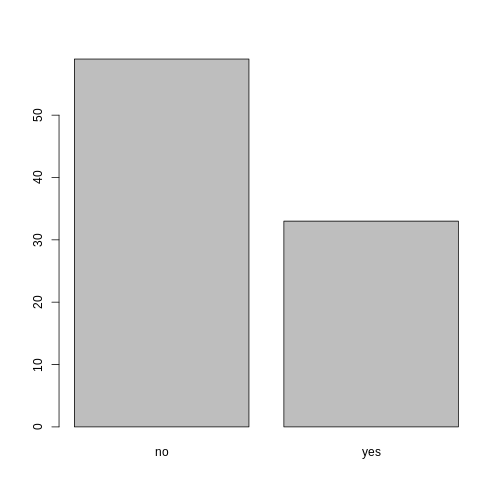
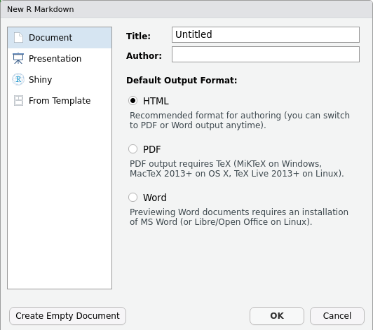
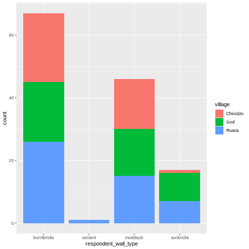
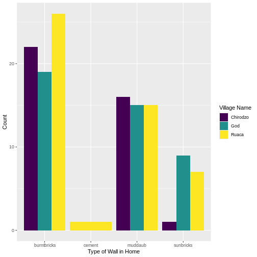

Content from Перед тим як почати
Last updated on 2026-01-19 | Edit this page
Overview
Questions
- Як орієнтуватися в RStudio?
- Як взаємодіяти з R?
- Як керувати робочим середовищем?
- Як встановити пакети?
Objectives
- Встановити останню версію R.
- Встановити останню версію RStudio.
- Ознайомитися з інтерфейсом RStudio.
- Встановити додаткові пакети за допомогою вкладки “packages”.
- Встановити додаткові пакети за допомогою команд R.
Що таке R? Що таке RStudio?
Термін “R” використовується як для позначення мови
програмування, так і для програмного забезпечення, яке виконує скрипти,
написані цією мовою.
RStudio нині є дуже популярним середовищем не тільки для написання скриптів на R, але й взаємодії з програмним забезпеченням R. Для правильної роботи RStudio потребує R і тому обидва необхідно встановити на ваш комп’ютер.
Щоб полегшити роботу з R, ми будемо використовувати RStudio. RStudio є найпопулярнішим IDE (інтегроване середовище розробки) для R. IDE - це частина програмного забезпечення, яка надає інструменти для полегшення програмування.
Також ви можете використовувати функцію R Presentations, щоб представляти свою роботу у вигляді презентації HTML5, поєднуючи Markdown і код на R. Ви можете переглядати їх безпосередньо в R Studio або у браузері. Є багато варіантів налаштування слайдів презентації, зокрема можливість зображати рівняння у форматі LaTeX. Це може допомогти вам співпрацювати з іншими, а також застосовувати для викладання та використання в класі.
Навіщо вивчати R?
У R не потрібно багато клацати мишкою — і це добре
Крива навчання може бути крутішою, ніж в інших програм, але в R результати аналізу залежать не від того, чи ви запам’ятали послідовність клацань мишкою, а від написаних команд — і це добре! Тому, якщо ви хочете повторити аналіз після того, як зібрали більше даних, вам не потрібно згадувати, у якому порядку ви натискали кнопки, щоб отримати результат — достатньо просто знову запустити свій скрипт.
Робота зі скриптами робить кроки вашого аналізу зрозумілими, а написаний вами код може переглянути інша людина, щоб дати відгук і помітити помилки.
Робота зі скриптами змушує вас глибше розуміти те, що ви робите, і допомагає краще вивчати та усвідомлювати методи, які ви використовуєте.
Код R сприяє відтворюваності
Відтворюваність — це коли інша людина (або навіть ви в майбутньому) може отримати ті самі результати з того самого набору даних, використовуючи той самий аналіз.
R інтегрується з іншими інструментами, щоб створювати публікації прямо з вашого коду. Якщо ви зберете більше даних або виправите помилку в наборі даних, графіки та статистичні тести у вашому документі оновляться автоматично.
Все більше журналів і грантодавців очікують, що аналізи будуть відтворюваними, тож знання R дає вам перевагу для виконання цих вимог.
Щоб ще більше підтримати відтворюваність і прозорість, існують пакети, які допомагають керувати залежностями: відстежувати, які пакети ми завантажуємо і як вони залежать від версії пакета, яку ви використовуєте. Це допомагає переконатися, що наявні робочі процеси працюють стабільно й продовжують виконувати те саме, що й раніше.
Такі пакети, як renv, дозволяють “зберігати” й “завантажувати” стан бібліотеки вашого проєкту, а також відстежують версії пакетів, які ви використовуєте, і джерело, з якого їх можна отримати.
R є міждисциплінарним і розширюваним
Маючи понад 10,000+ пакетів, які можна встановити для розширення її можливостей, R забезпечує середовище, що дозволяє поєднувати статистичні підходи з різних наукових дисциплін і підібрати саме ту аналітичну структуру, яка найкраще підходить для аналізу ваших даних. Наприклад, у R є пакети для аналізу зображень, GIS, часових рядів, популяційної генетики та багато іншого.
R працює з даними будь-яких форм і розмірів
Навички, які ви здобуваєте в R, легко масштабуються разом із розміром вашого набору даних. Незалежно від того, чи має ваш набір даних сотні чи мільйони рядків, це не матиме особливого значення для вас.
R призначений для аналізу даних. У R є спеціальні структури даних і типи даних, які роблять роботу з пропущеними значеннями та статистичними факторами зручною.
R може підключатися до електронних таблиць, баз даних та багатьох інших форматів даних — як на вашому комп’ютері, так і в інтернеті.
R створює високоякісну графіку
Можливості побудови графіків у R практично безмежні й дозволяють налаштувати будь-який аспект графіка, щоб якнайкраще передати зміст ваших даних.
R має велику та привітну спільноту
Тисячі людей використовують R щодня. Багато з них готові допомогти вам через списки розсилки та вебсайти, такі як Stack Overflow, або на спільноті RStudio. Питання, які супроводжуються короткими, відтворюваними фрагментами коду, швидше за все, отримують компетентні відповіді.
R не лише безплатна, вона також є з відкритим кодом і працює на різних операційних системах
Кожен може переглянути вихідний код, щоб побачити, як працює R. Завдяки такій прозорості менше шансів на помилки, а якщо ви (або хтось інший) їх знайдете — можна повідомити про них і виправити.
Оскільки R є відкритим кодом і підтримується великою спільнотою розробників та користувачів, існує дуже великий вибір сторонніх додаткових пакетів, які безплатно розширюють базові можливості R.


RStudio розширює можливості R та спрощує написання коду і взаємодію з R. Автор фото зліва; Автор фото справа.
Огляд RStudio
Знайомство з RStudio
Почнемо з вивчення RStudio, який є інтегрованим середовищем розробки (IDE) для роботи з R.
Відкрита версія RStudio IDE є безплатною за Загальна публічна ліцензія Affero (AGPL) v3. RStudio IDE також доступна з комерційною ліцензією та пріоритетною email-підтримкою від RStudio, Inc.
Ми будемо використовувати RStudio IDE для написання коду, роботи з файлами на комп’ютері, перегляду створених змінних і візуалізації побудованих графіків. RStudio також можна використовувати для інших речей (наприклад, контролю версій, розробки пакетів, створення Shiny-застосунків), які ми не розглядатимемо під час цього курсу.
Однією з переваг використання RStudio є те, що вся інформація, необхідна для написання коду, доступна в одному вікні. Крім того, RStudio надає багато комбінацій клавіш, автодоповнення та підсвічування синтаксису для основних типів файлів, які ви використовуєте під час роботи в R. RStudio робить набір коду простішим і менш схильним до помилок.
Налаштування
Це хороша практика зберегти набір пов’язаних даних, аналіз і текст самою текою під назвою робочий каталог. Усі скрипти у цій теці можуть потім використовувати відносні шляхи до файлів. Відносні шляхи вказують, де саме всередині проєкту знаходиться файл (на відміну від абсолютних шляхів, які показують розташування файлу на конкретному комп’ютері). Такий спосіб роботи значно полегшує перенесення вашого проєкту на інший комп’ютер або обмін ним з іншими, без потреби змінювати шляхи до файлів у кожному окремому скрипті.
RStudio надає зручні інструменти для цього через інтерфейс “Проєкти”, який не лише створює для вас робочий каталог, але й запам’ятовує її розташування (що дозволяє швидко повертатися до неї). Цей інтерфейс також (за бажанням) зберігає ваші налаштування та відкриті файли, щоб вам було легше продовжити роботу після перерви.
Створення нового проєкту
- У меню
File(файл) натиснітьNew project(новий проєкт), виберітьNew directory(новий каталог), потімNew project(новий проєкт) - Введіть назву цієї нової теки (або “каталогу”) і виберіть зручне
розташування для неї. Це буде ваш робочий каталог до
кінця дня (наприклад,
~/data-carpentry) - Натисніть
Create project(створити проєкт) - Створіть новий файл, у якому ми будемо писати наші скрипти.
Перейдіть до File (файл) > New File (новий файл) > R script
(скрипт R). Натисніть значок збереження на панелі інструментів і
збережіть ваш скрипт як “
script.R”.
Найпростіший спосіб відкрити проєкт RStudio після його створення - це
перейти до теки, де збережено проєкт і двічі клацнути на файлі
.Rproj (синій куб). Це відкриє RStudio і запустить вашу
сесію R у тому самому каталозі, де знаходиться файл
.Rproj. Усі ваші дані, графіки та скрипти тепер будуть
відносними до каталогу проєкт. Проєкти RStudio мають додаткову перевагу:
вони дозволяють відкривати кілька проєктів одночасно, кожен у власному
каталозі проєкту. Це дозволяє тримати відкритими кілька проєктів
одночасно, не заважаючи один одному.
Інтерфейс RStudio
Давайте швидко ознайомимося з RStudio.

RStudio поділено на чотири “панелі”. Розміщення цих панелей та їх вміст можна налаштувати (див. меню, Tools (Інструменти) -> Global Options (Глобальні параметри) -> Pane Layout (Макет панелі)).
Макет за замовчуванням:
- Ліворуч вгорі - Source: ваші скрипти та документи
- Ліворуч унизу - Console: як виглядав би R без RStudio
- Праворуч угорі - Environment/History: тут можна побачити, що ви зробили
- Праворуч унизу - Files і інші вкладки: тут можна переглядати вміст проєкту/робочого каталогу, наприклад ваш файл Script.R
Організація робочого каталогу
Використання послідовної структури тек у всіх ваших проєктах допоможе підтримувати порядок і полегшить знаходження та збереження файлів у майбутньому. Це може бути особливо корисним, коли у вас є кілька проєктів. Загалом, ви можете створити каталоги (теки) для скриптів, даних та документів. Ось - кілька прикладів запропонованих каталогів:
-
data/Використовуйте цю теку для зберігання необроблених даних та проміжних наборів даних. З метою прозорості та походження, ви повинні завжди зберігати копію ваших необроблених даних доступною та максимально виконувати очищення й попередню обробку даних програмно (тобто за допомогою скриптів, а не вручну), наскільки це можливо. -
data_output/Коли вам потрібно змінити необроблені дані, може бути корисно зберігати змінені версії наборів даних в іншій теці. -
documents/Використовується для контурів, чернеток та іншого тексту. -
fig_output/Ця тека може зберігати графіку, створену вашими скриптами. -
scripts/Місце для зберігання ваших R-скриптів для різних аналізів або побудови графіків.
Вам можуть знадобитися додаткові каталоги або підкаталоги залежно від потреб вашого проєкту, але вони повинні складати основу вашого робочого каталогу.

Робочий каталог
Робочий каталог - важливе поняття для розуміння. Це місце, де R буде шукати та зберігати файли. Коли ви пишете код для свого проєкту, ваші скрипти повинні посилатися на файли відносно кореня робочої директорії й лише на файли в межах цієї структури.
Використання проєктів RStudio полегшує роботу і гарантує належне
налаштування робочого каталогу. Якщо вам потрібно перевірити це, ви
можете використовувати getwd (). Якщо з якоїсь причини ваш
робочий каталог не збігається з місцем розташування вашого проєкту
RStudio, ймовірно, ви відкрили R-скрипт або файл RMarkDown
не ваш файл .Rproj. Вам необхідно закрити
RStudio і відкрити файл .Rproj, двічі клацнувши на синьому
кубі! Якщо вам коли-небудь потрібно змінити робочий каталог у скрипті,
setwd ('my/path') змінює робочий каталог. Це слід
використовувати обережно, оскільки такий підхід ускладнює обмін аналізом
між різними пристроями та іншими користувачами.
Завантаження даних та налаштування
Для цього уроку ми будемо використовувати такі теки в нашому робочому
каталозі: data/,
data_output/ та
fig_output/. Давайте послідовно запишемо
все з малих літер. Ми можемо створити їх через інтерфейс RStudio,
натиснувши кнопку “New Folder” у панелі файлів (справа внизу), або
безпосередньо в R, ввівши в консолі:
R
dir.create("data")
dir.create("data_output")
dir.create("fig_output")
Ви можете завантажити дані, використані для цього уроку, з GitHub або
за допомогою R. Ви можете скопіювати дані з цього посилання
GitHub і вставити їх у файл під назвою Safi_clean.csv у
каталозі data/, який ви щойно створили. Або ви можете
зробити це безпосередньо в R, скопіювавши та вставивши це у свій
термінал (викладач може розмістити цей фрагмент коду в Etherpad):
R
download.file("https://raw.githubusercontent.com/datacarpentry/r-socialsci/main/episodes/data/SAFI_clean.csv","data/SAFI_clean.csv", mode = "wb")
Взаємодія з R
Основою програмування є те, що ми записуємо інструкції, які комп’ютер має виконати, а потім даємо йому команду їх виконати. Ми записуємо або кодуємо інструкції в R, тому що це спільна мова, яку розуміє і комп’ютер, і ми. Ми називаємо ці інструкції командами і просимо комп’ютер виконати їх, тобто виконати (або запустити) ці команди.
Існує два основних способи взаємодії з R: за допомогою консолі або за допомогою файлів скриптів (звичайних текстових файлів, які містять ваш код). Консоль (у RStudio — це нижня ліва панель) — це місце, де можна вводити команди мовою R і комп’ютер одразу їх виконає. Це також місце, де будуть показані результати виконаних команд. Ви можете ввести команди безпосередньо в консоль і натиснути Enter, щоб виконати їх, але вони будуть втрачені, щойно ви закриєте сесію.
Оскільки ми хочемо, щоб наш код і робочий процес були відтворюваними, краще вводити потрібні команди в редактор скриптів і зберігати цей скрипт. Таким чином у нас залишається повний запис того, що ми зробили й будь-хто (включно з нами в майбутньому!) зможуть легко відтворити результати на своєму комп’ютері.
RStudio дозволяє виконувати команди прямо з редактора скриптів за допомогою комбінації клавіш Ctrl + Enter (на Mac, Cmd + Return). Команда на поточному рядку в скрипті (позначена курсором) або всі команди в виділеному тексті будуть надіслані на консоль і виконані при натисканні Ctrl + Enter. Якщо в консолі є інформація, яка вам більше не потрібна, ви можете очистити її за допомогою Ctrl + L. Ви можете знайти інші комбінації клавіш у цій шпаргалці RStudio про RStudio IDE.
На певному етапі аналізу ви можете перевірити вміст змінної або структуру об’єкта без необхідності збереження запису в вашому скрипті. Ви можете ввести ці команди та виконати їх безпосередньо в консолі. RStudio надає комбінації клавіш Ctrl + 1 та Ctrl + 2, що дозволяють переходити між скриптом і консоллю.
Якщо R готовий приймати команди, консоль R показує >.
Якщо R отримає команду (шляхом введення, копіювання-вставлення або
надіслану з редактора скриптів за допомогою Ctrl +
Enter), R спробує виконати її й коли буде готовий, покаже
результати та знову виведе новий >, щоб чекати на
наступні команди.
Якщо R все ще чекає, коли ви введете більше тексту, консоль покаже
+. Це означає, що ви не закінчили введення повної команди.
Ймовірно, це пов’язано з тим, що ви не ‘закрили’ дужки або цитату, тобто
у вас немає такої ж кількості лівих дужок, як правих дужок, або такої ж
кількості початкових та закритих лапок. Якщо таке трапляється, а ви
думали, що закінчили вводити команду, натисніть у вікні консолі та
натисніть Esc; це скасує незавершену команду та поверне вас
до запиту >. Потім ви можете коригувати введену команду
та виправити помилку.
Встановлення додаткових пакетів за допомогою вкладки “пакети”
На додаток до базової інсталяції R, існує понад 10,000 додаткових пакетів, які можуть бути використані для розширення функціональності R. Багато з них були написані користувачами R і були доступні в центральних репозиторіях, який розміщений на CRAN, щоб кожен міг завантажити та встановити їх у власне середовище R. У вас вже має бути встановлено пакети ‘ggplot2’ та ’dplyr. Якщо ви цього не зробили, будь ласка, зробіть це зараз, використовуючи ці інструкції.
Ви можете перевірити, чи встановлений у вас пакет, переглянувши
вкладку packages (за замовчуванням внизу праворуч). Ви
також можете ввести команду installed.packages()в консоль і
перевірити вивід.

Додаткові пакети можна встановити із вкладки ‘packages’. На вкладці пакетів натисніть значок ‘Install’ (Встановити) і почніть вводити назву потрібного пакета у текстовому полі. Під час введення тексту пакети, назви яких починаються з введених вами символів, будуть показуватися у випадному списку і ви зможете вибрати потрібний.

У нижній частині вікна Install Packages (Встановити пакети) є прапорець ‘Install’ dependencies (Встановити залежності). Цю опцію за замовчуванням увімкнено, і зазвичай саме так і потрібно. Пакети можуть (і справді) використовувати функціональність, вбудовану в інші пакети, тому для того, щоб функції пакета, який ви встановлюєте, працювали правильно, може знадобитися встановлення інших пакетів разом із ним. Опція ‘Install dependencies’ (встановити залежності) забезпечує, щоб ці додаткові пакети також були встановлені.
Завдання
Використовуйте вкладку Console (Консоль) і Packages (Пакети), щоб переконатися, що у вас встановлено tidyverse.
Прокрутіть вкладку пакетів вниз до ‘tidyverse’. Ви також можете ввести кілька символів у вікно пошуку. Пакет ‘tidyverse’ насправді є набором пакетів, включаючи ‘ggplot2’ та ‘dplyr’, які обидва потребують інших пакетів для коректної роботи. Всі ці пакети будуть встановлені автоматично. Залежно від того, які пакети раніше були встановлені у вашому середовищі R, встановлення ‘tidyverse’ може бути дуже швидким або ж зайняти кілька хвилин. Під час встановлення на консолі будуть виводитися повідомлення, пов’язані з прогресом його виконання. Ви зможете побачити всі пакети, які фактично встановлюються.
Оскільки процес встановлення отримує доступ до сховища CRAN, вам знадобиться підключення до Інтернету для встановлення пакетів.
Також можна встановити пакети з інших репозиторіїв, в тому числі з Github або локальної файлової системи, але ми не будемо розглядати ці варіанти в цьому уроці.
Встановлення додаткових пакетів за допомогою команд R
Якщо ви дивилися вікно консолі під час запуску встановлення ‘tidyverse’, можливо, ви помітили, що рядок
R
install.packages("tidyverse")
був записаний на консоль до початку інсталяційних повідомлень.
Ви також могли встановити пакети
tidyverse, виконавши цю команду
безпосередньо в терміналі R.
Ми будемо використовувати ще один пакет під назвою
here протягом усього курсу для керування
шляхами та каталогами. Ми обговоримо це більш детально в пізньому
епізоді, але зараз ми встановимо його в консолі:
R
install.packages("here")
- Використовуйте RStudio для створення та запуску програм R.
- Використовуйте
install.packages()для встановлення пакетів (бібліотек).
Content from Введення до R
Last updated on 2026-01-17 | Edit this page
Overview
Questions
- Які типи даних доступні в R?
- Що таке об’єкт?
- Як можна присвоювати іменам об’єкти різних типів даних?
- Які арифметичні та логічні оператори можна використовувати?
- Як можна отримати підмножини з векторів?
- Як в R трактувати відсутні значення?
- Як ми можемо впоратися з відсутніми значеннями в R?
Objectives
- Визначити такі терміни, як вони стосуються R: об’єкт, призначення, виклик, функція, аргументи, параметри.
- Призначити значення іменам у R.
- Дізнатися, як називати об’єкти.
- Використовувати коментарі для інформування сценарію.
- Розв’язувати прості арифметичні операції в R.
- Викликати функції та використовувати аргументи, щоб змінити їх параметри за замовчуванням.
- Оглянути вміст векторів і маніпулювати їх вмістом.
- Значення підмножини з векторів.
- Аналізувати вектори з відсутніми даними.
Створення об’єктів в R
Ви можете використовувати R для простих математичних обчислень, друкуючи формули у консолі:
R
3 + 5
OUTPUT
[1] 8R
12 / 7
OUTPUT
[1] 1.714286Все, що існує в R - це об’єкти: від простих числових
значень та рядків до складніших об’єктів, таких як вектори, матриці та
списки. Навіть вирази й функції є об’єктами в R.
Однак, щоб робити корисні та цікаві речі, нам потрібно звертатися до
об’єктів. Для цього нам потрібно вказати ім’я, за яким слідує
оператор присвоєння <-, і об’єкт, який ми
хочемо назвати:
R
areaHectares <- 1.0
<- - оператор присвоєння. Він призначає значення
(об’єкти) праворуч іменам (також званим символами) на ліворуч.
Отже, після виконання x <- 3 значення x
дорівнює 3. Стрілку можна прочитати як 3 переходить
в x. З історичних причин ви також можете
використовувати = для присвоєння, але не в кожному
контексті. Через незначні
відмінності у синтаксисі, рекомендується завжди використовувати
<- для присвоєння. Більше загалом ми віддаємо перевагу
синтаксису <- перед =, оскільки він дає
зрозуміти, в якому напрямку працює призначення (ліве призначення), і це
збільшує читабельність коду.
У RStudio ввівши Alt + - (натискайте
Alt одночасно з клавішею -) запише
<- за допомогою лише однієї комбінації швидких клавіш у
Windows. На Mac, те ж саме можна зробити, вводячи Option +
- (натискайте Option одночасно з клавішею
-).
Об’єктам можна дати будь-яку назву, наприклад x,
current_temperature або subject_id. Ви хочете,
щоб ваші назви об’єктів були явними й не надто довгими. Вони не можуть
починатися з числа (2x не є дійсним, але x2
є). R чутливий до регістру (наприклад, age відрізняється
від Age). Є деякі назви, які не можна використовувати,
оскільки вони є назвами фундаментальних об’єктів у R (наприклад,
if, else, for, див. тут
для повного списку). Загалом, навіть якщо це дозволено, краще не
використовувати їх (наприклад, c, T,
mean, data, df,
weights). Якщо ви сумніваєтесь, перевірте довідку, щоб
побачити, чи ім’я вже використовується. Також краще уникати крапок
(.) у назві об’єкта, як у my.dataset. Існує
багато об’єктів в R з крапками в назвах з історичних причин, але
оскільки точки мають особливе значення в R (для методів) та інших мовах
програмування, краще уникати їх. Рекомендований стиль написання
називається snake _case, що передбачає використання лише малих літер та
цифр та розділення кожного слова підкресленням (наприклад,
animal _weight, average _income). Також рекомендується використовувати
іменники для назв об’єктів, а дієслова для назв функцій. Важливо бути
послідовним у стилізації вашого коду (де ви розміщуєте пробіли, як ви
називаєте об’єкти тощо). Використання послідовного стилю кодування
робить ваш код зрозумілішим для читання для вас та ваших співробітників.
У R три популярні посібники зі стилю: Google, Jean
Fan’s та tidyverse. Tidyverse
дуже вичерпний і спочатку може здатися приголомшливим. Ви можете
встановити пакет lintr,
щоб автоматично перевіряти на наявність проблем у стилі вашого коду.
Об’єкти проти змінних
Іменування об’єктів у R якось пов’язане з
змінними у багатьох інших мовах програмування. У багатьох
мовах програмування змінна має три аспекти: ім’я, місце розташування
пам’яті та поточне значення, що зберігається в цьому місці.
R абстракції з модифікованих місць пам’яті. У
R ми маємо лише об’єкти, які можна назвати. Залежно від
контексту name (of a object)і variable можуть
мати різко різні значення. Однак у цьому уроці два слова
використовуються як синоніми. Для отримання додаткової інформації див.:
https://cran.r-project.org/doc/manuals/r-release/R-lang.html#Objects
При присвоюванні значення назви, R не друкує нічого. Ви можете змусити R надрукувати значення за допомогою дужок або ввівши назву об’єкта:
R
area_hectares <- 1.0 # не виводить нічого
(area_hectares <- 1.0) # якщо взяти вираз у дужки — він надрукує значення `area_hectares`
OUTPUT
[1] 1R
area_hectares # друкує значення також, якщо просто ввести назву об’єкта
OUTPUT
[1] 1Тепер, коли R має area_hectares в пам’яті, ми можемо
робити з ним арифметичні операції. Наприклад, ми можемо захотіти
перетворити цю площу на гектари (площа в акрах дорівнює 2,47 р. більше
площі в гектарах):
R
2.47 * area_hectares
OUTPUT
[1] 2.47Ми також можемо змінити значення, присвоєне імені, призначивши йому нове:
R
area_hectares <- 2.5
2.47 * area_hectares
OUTPUT
[1] 6.175Це означає, що присвоєння значення одному імені не змінює значення
інших імен. Наприклад, назвемо площу ділянки в акрах
areaAcres:
R
area_acres <- 2.47 * area_hectares
потім змінити (перепризначити) area_hectares на 50.
R
area_hectares <- 50
Завдання
Як ви думаєте, яке поточне значення area_acres? 123.5
або 6.175?
The value of area_acres is still 6.175 because you have
not re-run the line area_acres <- 2.47 * area_hectares
since changing the value of area_hectares.
Comments
All programming languages allow the programmer to include comments in their code. Including comments to your code has many advantages: it helps you explain your reasoning and it forces you to be tidy. A commented code is also a great tool not only to your collaborators, but to your future self. Comments are the key to a reproducible analysis.
To do this in R we use the # character. Anything to the
right of the # sign and up to the end of the line is
treated as a comment and is ignored by R. You can start lines with
comments or include them after any code on the line.
R
area_hectares <- 1.0 # land area in hectares
area_acres <- area_hectares * 2.47 # convert to acres
area_acres # print land area in acres.
OUTPUT
[1] 2.47RStudio makes it easy to comment or uncomment a paragraph: after selecting the lines you want to comment, press at the same time on your keyboard Ctrl + Shift + C. If you only want to comment out one line, you can put the cursor at any location of that line (i.e. no need to select the whole line), then press Ctrl + Shift + C.
Exercise
Create two variables r_length and r_width
and assign them values. It should be noted that, because
length is a built-in R function, R Studio might add “()”
after you type length and if you leave the parentheses you
will get unexpected results. This is why you might see other programmers
abbreviate common words. Create a third variable r_area and
give it a value based on the current values of r_length and
r_width. Show that changing the values of either
r_length and r_width does not affect the value
of r_area.
R
r_length <- 2.5
r_width <- 3.2
r_area <- r_length * r_width
r_area
OUTPUT
[1] 8R
# change the values of r_length and r_width
r_length <- 7.0
r_width <- 6.5
# the value of r_area isn't changed
r_area
OUTPUT
[1] 8Functions and their arguments
Functions are “canned scripts” that automate more complicated sets of
commands including operations assignments, etc. Many functions are
predefined, or can be made available by importing R packages
(more on that later). A function usually gets one or more inputs called
arguments. Functions often (but not always) return a
value. A typical example would be the function
sqrt(). The input (the argument) must be a number, and the
return value (in fact, the output) is the square root of that number.
Executing a function (‘running it’) is called calling the
function. An example of a function call is:
R
b <- sqrt(a)
Here, the value of a is given to the sqrt()
function, the sqrt() function calculates the square root,
and returns the value which is then assigned to the name b.
This function is very simple, because it takes just one argument.
The return ‘value’ of a function need not be numerical (like that of
sqrt()), and it also does not need to be a single item: it
can be a set of things, or even a dataset. We’ll see that when we read
data files into R.
Arguments can be anything, not only numbers or filenames, but also other objects. Exactly what each argument means differs per function, and must be looked up in the documentation (see below). Some functions take arguments which may either be specified by the user, or, if left out, take on a default value: these are called options. Options are typically used to alter the way the function operates, such as whether it ignores ‘bad values’, or what symbol to use in a plot. However, if you want something specific, you can specify a value of your choice which will be used instead of the default.
Let’s try a function that can take multiple arguments:
round().
R
round(3.14159)
OUTPUT
[1] 3Here, we’ve called round() with just one argument,
3.14159, and it has returned the value 3.
That’s because the default is to round to the nearest whole number. If
we want more digits we can see how to do that by getting information
about the round function. We can use
args(round) or look at the help for this function using
?round.
R
args(round)
OUTPUT
function (x, digits = 0, ...)
NULLR
?round
We see that if we want a different number of digits, we can type
digits=2 or however many we want.
R
round(3.14159, digits = 2)
OUTPUT
[1] 3.14If you provide the arguments in the exact same order as they are defined you don’t have to name them:
R
round(3.14159, 2)
OUTPUT
[1] 3.14And if you do name the arguments, you can switch their order:
R
round(digits = 2, x = 3.14159)
OUTPUT
[1] 3.14It’s good practice to put the non-optional arguments (like the number you’re rounding) first in your function call, and to specify the names of all optional arguments. If you don’t, someone reading your code might have to look up the definition of a function with unfamiliar arguments to understand what you’re doing.
Exercise
Type in ?round at the console and then look at the
output in the Help pane. What other functions exist that are similar to
round? How do you use the digits parameter in
the round function?
Vectors and data types
A vector is the most common and basic data type in R, and is pretty
much the workhorse of R. A vector is composed by a series of values,
which can be either numbers or characters. We can assign a series of
values to a vector using the c() function. For example we
can create a vector of the number of household members for the
households we’ve interviewed and assign it to
hh_members:
R
hh_members <- c(3, 7, 10, 6)
hh_members
OUTPUT
[1] 3 7 10 6A vector can also contain characters. For example, we can have a
vector of the building material used to construct our interview
respondents’ walls (respondent_wall_type):
R
respondent_wall_type <- c("muddaub", "burntbricks", "sunbricks")
respondent_wall_type
OUTPUT
[1] "muddaub" "burntbricks" "sunbricks" The quotes around “muddaub”, etc. are essential here. Without the
quotes R will assume there are objects called muddaub,
burntbricks and sunbricks. As these names
don’t exist in R’s memory, there will be an error message.
There are many functions that allow you to inspect the content of a
vector. length() tells you how many elements are in a
particular vector:
R
length(hh_members)
OUTPUT
[1] 4R
length(respondent_wall_type)
OUTPUT
[1] 3An important feature of a vector, is that all of the elements are the
same type of data. The function typeof() indicates the type
of an object:
R
typeof(hh_members)
OUTPUT
[1] "double"R
typeof(respondent_wall_type)
OUTPUT
[1] "character"The function str() provides an overview of the structure
of an object and its elements. It is a useful function when working with
large and complex objects:
R
str(hh_members)
OUTPUT
num [1:4] 3 7 10 6R
str(respondent_wall_type)
OUTPUT
chr [1:3] "muddaub" "burntbricks" "sunbricks"You can use the c() function to add other elements to
your vector:
R
possessions <- c("bicycle", "radio", "television")
possessions <- c(possessions, "mobile_phone") # add to the end of the vector
possessions <- c("car", possessions) # add to the beginning of the vector
possessions
OUTPUT
[1] "car" "bicycle" "radio" "television" "mobile_phone"In the first line, we take the original vector
possessions, add the value "mobile_phone" to
the end of it, and save the result back into possessions.
Then we add the value "car" to the beginning, again saving
the result back into possessions.
We can do this over and over again to grow a vector, or assemble a dataset. As we program, this may be useful to add results that we are collecting or calculating.
An atomic vector is the simplest R data
type and is a linear vector of a single type. Above, we saw 2
of the 6 main atomic vector types that R uses:
"character" and "numeric" (or
"double"). These are the basic building blocks that all R
objects are built from. The other 4 atomic vector types
are:
-
"logical"forTRUEandFALSE(the boolean data type) -
"integer"for integer numbers (e.g.,2L, theLindicates to R that it’s an integer) -
"complex"to represent complex numbers with real and imaginary parts (e.g.,1 + 4i) and that’s all we’re going to say about them -
"raw"for bitstreams that we won’t discuss further
You can check the type of your vector using the typeof()
function and inputting your vector as the argument.
Vectors are one of the many data structures that R
uses. Other important ones are lists (list), matrices
(matrix), data frames (data.frame), factors
(factor) and arrays (array).
Exercise
We’ve seen that atomic vectors can be of type character, numeric (or double), integer, and logical. But what happens if we try to mix these types in a single vector?
R implicitly converts them to all be the same type.
Exercise (continued)
What will happen in each of these examples? (hint: use
class() to check the data type of your objects):
R
num_char <- c(1, 2, 3, "a")
num_logical <- c(1, 2, 3, TRUE)
char_logical <- c("a", "b", "c", TRUE)
tricky <- c(1, 2, 3, "4")
Why do you think it happens?
Vectors can be of only one data type. R tries to convert (coerce) the content of this vector to find a “common denominator” that doesn’t lose any information.
Exercise (continued)
How many values in combined_logical are
"TRUE" (as a character) in the following example:
R
num_logical <- c(1, 2, 3, TRUE)
char_logical <- c("a", "b", "c", TRUE)
combined_logical <- c(num_logical, char_logical)
Only one. There is no memory of past data types, and the coercion
happens the first time the vector is evaluated. Therefore, the
TRUE in num_logical gets converted into a
1 before it gets converted into "1" in
combined_logical.
Exercise (continued)
You’ve probably noticed that objects of different types get converted into a single, shared type within a vector. In R, we call converting objects from one class into another class coercion. These conversions happen according to a hierarchy, whereby some types get preferentially coerced into other types. Can you draw a diagram that represents the hierarchy of how these data types are coerced?
Subsetting vectors
Subsetting (sometimes referred to as extracting or indexing) involves accessing out one or more values based on their numeric placement or “index” within a vector. If we want to subset one or several values from a vector, we must provide one index or several indices in square brackets. For instance:
R
respondent_wall_type <- c("muddaub", "burntbricks", "sunbricks")
respondent_wall_type[2]
OUTPUT
[1] "burntbricks"R
respondent_wall_type[c(3, 2)]
OUTPUT
[1] "sunbricks" "burntbricks"We can also repeat the indices to create an object with more elements than the original one:
R
more_respondent_wall_type <- respondent_wall_type[c(1, 2, 3, 2, 1, 3)]
more_respondent_wall_type
OUTPUT
[1] "muddaub" "burntbricks" "sunbricks" "burntbricks" "muddaub"
[6] "sunbricks" R indices start at 1. Programming languages like Fortran, MATLAB, Julia, and R start counting at 1, because that’s what human beings typically do. Languages in the C family (including C++, Java, Perl, and Python) count from 0 because that’s simpler for computers to do.
Conditional subsetting
Another common way of subsetting is by using a logical vector.
TRUE will select the element with the same index, while
FALSE will not:
R
hh_members <- c(3, 7, 10, 6)
hh_members[c(TRUE, FALSE, TRUE, TRUE)]
OUTPUT
[1] 3 10 6Typically, these logical vectors are not typed by hand, but are the output of other functions or logical tests. For instance, if you wanted to select only the values above 5:
R
hh_members > 5 # will return logicals with TRUE for the indices that meet the condition
OUTPUT
[1] FALSE TRUE TRUE TRUER
## so we can use this to select only the values above 5
hh_members[hh_members > 5]
OUTPUT
[1] 7 10 6You can combine multiple tests using & (both
conditions are true, AND) or | (at least one of the
conditions is true, OR):
R
hh_members[hh_members < 4 | hh_members > 7]
OUTPUT
[1] 3 10R
hh_members[hh_members >= 4 & hh_members <= 7]
OUTPUT
[1] 7 6Here, < stands for “less than”, > for
“greater than”, >= for “greater than or equal to”, and
== for “equal to”. The double equal sign == is
a test for numerical equality between the left and right hand sides, and
should not be confused with the single = sign, which
performs variable assignment (similar to <-).
A common task is to search for certain strings in a vector. One could
use the “or” operator | to test for equality to multiple
values, but this can quickly become tedious.
R
possessions <- c("car", "bicycle", "radio", "television", "mobile_phone")
possessions[possessions == "car" | possessions == "bicycle"] # returns both car and bicycle
OUTPUT
[1] "car" "bicycle"The function %in% allows you to test if any of the
elements of a search vector (on the left hand side) are found in the
target vector (on the right hand side):
R
possessions %in% c("car", "bicycle")
OUTPUT
[1] TRUE TRUE FALSE FALSE FALSENote that the output is the same length as the search vector on the
left hand side, because %in% checks whether each element of
the search vector is found somewhere in the target vector. Thus, you can
use %in% to select the elements in the search vector that
appear in your target vector:
R
possessions %in% c("car", "bicycle", "motorcycle", "truck", "boat", "bus")
OUTPUT
[1] TRUE TRUE FALSE FALSE FALSER
possessions[possessions %in% c("car", "bicycle", "motorcycle", "truck", "boat", "bus")]
OUTPUT
[1] "car" "bicycle"Missing data
As R was designed to analyze datasets, it includes the concept of
missing data (which is uncommon in other programming languages). Missing
data are represented in vectors as NA.
When doing operations on numbers, most functions will return
NA if the data you are working with include missing values.
This feature makes it harder to overlook the cases where you are dealing
with missing data. You can add the argument na.rm=TRUE to
calculate the result while ignoring the missing values.
R
rooms <- c(2, 1, 1, NA, 7)
mean(rooms)
OUTPUT
[1] NAR
max(rooms)
OUTPUT
[1] NAR
mean(rooms, na.rm = TRUE)
OUTPUT
[1] 2.75R
max(rooms, na.rm = TRUE)
OUTPUT
[1] 7If your data include missing values, you may want to become familiar
with the functions is.na(), na.omit(), and
complete.cases(). See below for examples.
R
## Extract those elements which are not missing values.
## The ! character is also called the NOT operator
rooms[!is.na(rooms)]
OUTPUT
[1] 2 1 1 7R
## Count the number of missing values.
## The output of is.na() is a logical vector (TRUE/FALSE equivalent to 1/0) so the sum() function here is effectively counting
sum(is.na(rooms))
OUTPUT
[1] 1R
## Returns the object with incomplete cases removed. The returned object is an atomic vector of type `"numeric"` (or `"double"`).
na.omit(rooms)
OUTPUT
[1] 2 1 1 7
attr(,"na.action")
[1] 4
attr(,"class")
[1] "omit"R
## Extract those elements which are complete cases. The returned object is an atomic vector of type `"numeric"` (or `"double"`).
rooms[complete.cases(rooms)]
OUTPUT
[1] 2 1 1 7Recall that you can use the typeof() function to find
the type of your atomic vector.
Exercise
- Using this vector of rooms, create a new vector with the NAs removed.
R
rooms <- c(1, 2, 1, 1, NA, 3, 1, 3, 2, 1, 1, 8, 3, 1, NA, 1)
Use the function
median()to calculate the median of theroomsvector.Use R to figure out how many households in the set use more than 2 rooms for sleeping.
R
rooms <- c(1, 2, 1, 1, NA, 3, 1, 3, 2, 1, 1, 8, 3, 1, NA, 1)
rooms_no_na <- rooms[!is.na(rooms)]
# or
rooms_no_na <- na.omit(rooms)
# 2.
median(rooms, na.rm = TRUE)
OUTPUT
[1] 1R
# 3.
rooms_above_2 <- rooms_no_na[rooms_no_na > 2]
length(rooms_above_2)
OUTPUT
[1] 4Now that we have learned how to write scripts, and the basics of R’s data structures, we are ready to start working with the SAFI dataset we have been using in the other lessons, and learn about data frames.
- Access individual values by location using
[]. - Access arbitrary sets of data using
[c(...)]. - Use logical operations and logical vectors to access subsets of data.
Content from Починаємо з даних
Last updated on 2026-01-17 | Edit this page
Overview
Questions
- Що таке датафрейм?
- Як я можу прочитати повний файл csv в R?
- Як я можу отримати основну зведену інформацію про мій набір даних?
- Як я можу змінити спосіб обробки R рядків у моєму наборі даних?
- Чому мені потрібно, щоб текстові рядки оброблялися інакше?
- Як у R представлені дати і як можна змінити їхній формат?
Objectives
- Описати що таке датафрейм.
- Завантажити зовнішні дані з файлу .csv в датафрейм.
- Підсумувати вміст датафрейму.
- Вибрати підмножину значень із датафреймів.
- Пояснити різницю між фактором і рядком.
- Перетворення між рядками та факторами.
- Упорядкувати та перейменувати фактори.
- Змінити спосіб обробки символьних рядків у датафреймі.
- Перевірити та змінити формат дат.
Що таке датафрейми?
Датафрейм - це стандартна структура даних для табличних даних у
R, яку ми використовуємо для обробки даних, статистичного
аналізу та візуалізації.
Датафрейм - це представлення даних у форматі таблиці, де стовпці є векторами, які мають однакову довжину. Датафрейми можна порівняти зі звичною електронною таблицею в програмах на кшталт Excel, але є одна важлива відмінність. Оскільки стовпці є векторами, кожен стовпець повинен містити один тип даних (наприклад, символи, цілі числа, фактори). Наприклад, на зображенні показано датафрейм, який складається з числового (numeric), текстового (character) та логічного (logical) векторів.

Датафрейм можна створювати вручну, але найчастіше вони генеруються
функціями read_csv()або read_table(); іншими
словами, при імпорті електронних таблиць з вашого жорсткого диска (або
Інтернету). Тепер ми продемонструємо, як імпортувати табличні дані за
допомогою read_csv().
Презентація даних SAFI
SAFI (Studying African Farmer-Led Irrigation) — це дослідження, яке вивчає методи ведення сільського господарства та іригації в Танзанії та Мозамбіку. Дані опитування були зібрані за допомогою інтерв’ю, проведених у період з листопада 2016 року до червня 2017 року. Для цього уроку ми будемо використовувати підмножину доступних даних. Для отримання інформації про повний навчальний набір даних, який використовується в інших уроках цього семінару, дивіться опис набору даних.
Ми будемо використовувати підмножину очищеної версії набору даних,
яку було створено шляхом очищення в OpenRefine
(data/SAFI_clean.csv). У цьому наборі даних відсутні
значення позначені як “NULL”, кожен рядок містить інформацію про одного
респондента інтерв’ю, а стовпці представляють:
| назва/стовпця | опис |
|---|---|
| key_id | Додано, щоб надати унікальний ідентифікатор для кожного спостереження. (Поле InstanceID також робить це, але воно не так зручно у використанні) |
| village | Назва села |
| interview_date | Дата співбесіди |
| no_membrs | Скільки членів у домогосподарстві? |
| years_liv | Скільки років ви живете в цьому селі чи сусідньому селі? |
| respondent_wall_type | Який тип стін має їхній будинок (зі списку) |
| rooms | Скільки кімнат в основному будинку використовується для сну? |
| memb_assoc | Ви член зрошувальної асоціації? |
| affect_conflicts | Ви постраждали від конфліктів з іншими іригаторами в цьому районі? |
| liv_count | Кількість тваринництва, що перебуває у власності. |
| items_owned | Які з перерахованих предметів належать домогосподарству? (список) |
| no_meals | Скільки страв люди у вашому домогосподарстві зазвичай їдять за день? |
| months_lack_food | Вкажіть, на які місяці, в останні 12 місяців ви стикалися з ситуацією, коли у вас не було достатньо їжі, щоб прогодувати домогосподарство? |
| instanceID | Унікальний ідентифікатор для подання даних форми |
Імпорт даних
Ви збираєтеся завантажити дані в пам’ять R за допомогою функції
read_csv() з пакета readr,
який є частиною tidyverse; дізнайтеся
більше про колекцію пакетів tidyverse тут.
readr встановлюється як частина
tidyverse встановлення. Коли ви
завантажуєте tidyverse
(library(tidyverse)), завантажуються основні пакети
(пакети, які використовуються в більшості аналізів даних), включаючи
readr.
Однак, перш ніж продовжити, це хороша можливість поговорити про
конфлікти. Деякі пакети, які ми завантажуємо, можуть в кінцевому
підсумку вводити імена функцій, які вже використовуються попередньо
завантаженими пакетами R. Наприклад, коли ми завантажимо пакет tidyverse
нижче, ми введемо дві суперечливі функції: filter()і
lag(). Це відбувається тому, що filter і
lag вже є функціями, які використовуються пакетом stats
(вже попередньо завантажений у R). Тепер, якщо ми, наприклад, викликаємо
функцію filter(), R використовуватиме
dplyr::filter() версії, а не stats::filter().
Це відбувається тому, що, якщо це конфлікт, за замовчуванням R
використовує функцію з останнього завантаженого пакета. Конфліктні
функції можуть викликати у вас певні проблеми в майбутньому, тому
важливо, щоб ми знали про них, щоб ми могли правильно обробляти їх, якщо
хочемо.
To do so, we just need the following functions from the conflicted package:
-
conflicted::conflict_scout(): Shows us any conflicted functions. -
conflict_prefer("function", "package_prefered"): Allows us to choose the default function we want from now on.
It is also important to know that we can, at any time, just call the
function directly from the package we want, such as
stats::filter().
Even with the use of an RStudio project, it can be difficult to learn
how to specify paths to file locations. Enter the here
package! The here package creates paths relative to the top-level
directory (your RStudio project). These relative paths work
regardless of where the associated source file lives inside
your project, like analysis projects with data and reports in different
subdirectories. This is an important contrast to using
setwd(), which depends on the way you order your files on
your computer.

Before we can use the read_csv() and here()
functions, we need to load the tidyverse and here packages.
Also, if you recall, the missing data is encoded as “NULL” in the
dataset. We’ll tell it to the function, so R will automatically convert
all the “NULL” entries in the dataset into NA.
R
library(tidyverse)
library(here)
interviews <- read_csv(
here("data", "SAFI_clean.csv"),
na = "NULL")
In the above code, we notice the here() function takes
folder and file names as inputs (e.g., "data",
"SAFI_clean.csv"), each enclosed in quotations
("") and separated by a comma. The here() will
accept as many names as are necessary to navigate to a particular file
(e.g.,
here("analysis", "data", "surveys", "clean", "SAFI_clean.csv)).
The here() function can accept the folder and file names
in an alternate format, using a slash (“/”) rather than commas to
separate the names. The two methods are equivalent, so that
here("data", "SAFI_clean.csv") and
here("data/SAFI_clean.csv") produce the same result. (The
slash is used on all operating systems; backslashes are not used.)
If you were to type in the code above, it is likely that the
read.csv() function would appear in the automatically
populated list of functions. This function is different from the
read_csv() function, as it is included in the “base”
packages that come pre-installed with R. Overall,
read.csv() behaves similar to read_csv(), with
a few notable differences. First, read.csv() coerces column
names with spaces and/or special characters to different names
(e.g. interview date becomes interview.date).
Second, read.csv() stores data as a
data.frame, where read_csv() stores data as a
different kind of data frame called a tibble. We prefer
tibbles because they have nice printing properties among other desirable
qualities. Read more about tibbles here.
The second statement in the code above creates a data frame but
doesn’t output any data because, as you might recall, assignments
(<-) don’t display anything. (Note, however, that
read_csv may show informational text about the data frame
that is created.) If we want to check that our data has been loaded, we
can see the contents of the data frame by typing its name:
interviews in the console.
R
interviews
## Try also
## view(interviews)
## head(interviews)
OUTPUT
# A tibble: 131 × 14
key_ID village interview_date no_membrs years_liv respondent_wall_type
<dbl> <chr> <dttm> <dbl> <dbl> <chr>
1 1 God 2016-11-17 00:00:00 3 4 muddaub
2 2 God 2016-11-17 00:00:00 7 9 muddaub
3 3 God 2016-11-17 00:00:00 10 15 burntbricks
4 4 God 2016-11-17 00:00:00 7 6 burntbricks
5 5 God 2016-11-17 00:00:00 7 40 burntbricks
6 6 God 2016-11-17 00:00:00 3 3 muddaub
7 7 God 2016-11-17 00:00:00 6 38 muddaub
8 8 Chirodzo 2016-11-16 00:00:00 12 70 burntbricks
9 9 Chirodzo 2016-11-16 00:00:00 8 6 burntbricks
10 10 Chirodzo 2016-12-16 00:00:00 12 23 burntbricks
# ℹ 121 more rows
# ℹ 8 more variables: rooms <dbl>, memb_assoc <chr>, affect_conflicts <chr>,
# liv_count <dbl>, items_owned <chr>, no_meals <dbl>, months_lack_food <chr>,
# instanceID <chr>Note
read_csv() assumes that fields are delimited by commas.
However, in several countries, the comma is used as a decimal separator
and the semicolon (;) is used as a field delimiter. If you want to read
in this type of files in R, you can use the read_csv2
function. It behaves exactly like read_csv but uses
different parameters for the decimal and the field separators. If you
are working with another format, they can be both specified by the user.
Check out the help for read_csv() by typing
?read_csv to learn more. There is also the
read_tsv() for tab-separated data files, and
read_delim() allows you to specify more details about the
structure of your file.
Note that read_csv() actually loads the data as a
tibble. A tibble is an extension of R data frames used by
the tidyverse. When the data is read using
read_csv(), it is stored in an object of class
tbl_df, tbl, and data.frame. You
can see the class of an object with
R
class(interviews)
OUTPUT
[1] "spec_tbl_df" "tbl_df" "tbl" "data.frame" As a tibble, the type of data included in each column is
listed in an abbreviated fashion below the column names. For instance,
here key_ID is a column of floating point numbers
(abbreviated <dbl> for the word ‘double’),
village is a column of characters
(<chr>) and the interview_date is a
column in the “date and time” format (<dttm>).
Inspecting data frames
When calling a tbl_df object (like
interviews here), there is already a lot of information
about our data frame being displayed such as the number of rows, the
number of columns, the names of the columns, and as we just saw the
class of data stored in each column. However, there are functions to
extract this information from data frames. Here is a non-exhaustive list
of some of these functions. Let’s try them out!
Size:
-
dim(interviews)- returns a vector with the number of rows as the first element, and the number of columns as the second element (the dimensions of the object) -
nrow(interviews)- повертає кількість рядків -
ncol(interviews)- повертає кількість стовпців
Content:
-
head(interviews)- shows the first 6 rows -
tail(interviews)- shows the last 6 rows
Names:
-
names(interviews)- returns the column names (synonym ofcolnames()fordata.frameobjects)
Summary:
-
str(interviews)- structure of the object and information about the class, length and content of each column -
summary(interviews)- summary statistics for each column -
glimpse(interviews)- returns the number of columns and rows of the tibble, the names and class of each column, and previews as many values will fit on the screen. Unlike the other inspecting functions listed above,glimpse()is not a “base R” function so you need to have thedplyrortibblepackages loaded to be able to execute it.
Note: most of these functions are “generic.” They can be used on other types of objects besides data frames or tibbles.
Subsetting data frames
Our interviews data frame has rows and columns (it has 2
dimensions). In practice, we may not need the entire data frame; for
instance, we may only be interested in a subset of the observations (the
rows) or a particular set of variables (the columns). If we want to
access some specific data from it, we need to specify the “coordinates”
(i.e., indices) we want from it. Row numbers come first, followed by
column numbers.
Tip
Subsetting a tibble with [ always results
in a tibble. However, note this is not true in general for
data frames, so be careful! Different ways of specifying these
coordinates can lead to results with different classes. This is covered
in the Software Carpentry lesson R for
Reproducible Scientific Analysis.
R
## first element in the first column of the tibble
interviews[1, 1]
OUTPUT
# A tibble: 1 × 1
key_ID
<dbl>
1 1R
## first element in the 6th column of the tibble
interviews[1, 6]
OUTPUT
# A tibble: 1 × 1
respondent_wall_type
<chr>
1 muddaub R
## first column of the tibble (as a vector)
interviews[[1]]
OUTPUT
[1] 1 2 3 4 5 6 7 8 9 10 11 12 13 14 15 16 17 18
[19] 19 20 21 22 23 24 25 26 27 28 29 30 31 32 33 34 35 36
[37] 37 38 39 40 41 42 43 44 45 46 47 48 49 50 51 52 53 54
[55] 55 56 57 58 59 60 61 62 63 64 65 66 67 68 69 70 71 127
[73] 133 152 153 155 178 177 180 181 182 186 187 195 196 197 198 201 202 72
[91] 73 76 83 85 89 101 103 102 78 80 104 105 106 109 110 113 118 125
[109] 119 115 108 116 117 144 143 150 159 160 165 166 167 174 175 189 191 192
[127] 126 193 194 199 200R
## first column of the tibble
interviews[1]
OUTPUT
# A tibble: 131 × 1
key_ID
<dbl>
1 1
2 2
3 3
4 4
5 5
6 6
7 7
8 8
9 9
10 10
# ℹ 121 more rowsR
## first three elements in the 7th column of the tibble
interviews[1:3, 7]
OUTPUT
# A tibble: 3 × 1
rooms
<dbl>
1 1
2 1
3 1R
## the 3rd row of the tibble
interviews[3, ]
OUTPUT
# A tibble: 1 × 14
key_ID village interview_date no_membrs years_liv respondent_wall_type
<dbl> <chr> <dttm> <dbl> <dbl> <chr>
1 3 God 2016-11-17 00:00:00 10 15 burntbricks
# ℹ 8 more variables: rooms <dbl>, memb_assoc <chr>, affect_conflicts <chr>,
# liv_count <dbl>, items_owned <chr>, no_meals <dbl>, months_lack_food <chr>,
# instanceID <chr>R
## equivalent to head_interviews <- head(interviews)
head_interviews <- interviews[1:6, ]
: is a special function that creates numeric vectors of
integers in increasing or decreasing order, test 1:10 and
10:1 for instance.
You can also exclude certain indices of a data frame using the
“-” sign:
R
interviews[, -1] # The whole tibble, except the first column
OUTPUT
# A tibble: 131 × 13
village interview_date no_membrs years_liv respondent_wall_type rooms
<chr> <dttm> <dbl> <dbl> <chr> <dbl>
1 God 2016-11-17 00:00:00 3 4 muddaub 1
2 God 2016-11-17 00:00:00 7 9 muddaub 1
3 God 2016-11-17 00:00:00 10 15 burntbricks 1
4 God 2016-11-17 00:00:00 7 6 burntbricks 1
5 God 2016-11-17 00:00:00 7 40 burntbricks 1
6 God 2016-11-17 00:00:00 3 3 muddaub 1
7 God 2016-11-17 00:00:00 6 38 muddaub 1
8 Chirodzo 2016-11-16 00:00:00 12 70 burntbricks 3
9 Chirodzo 2016-11-16 00:00:00 8 6 burntbricks 1
10 Chirodzo 2016-12-16 00:00:00 12 23 burntbricks 5
# ℹ 121 more rows
# ℹ 7 more variables: memb_assoc <chr>, affect_conflicts <chr>,
# liv_count <dbl>, items_owned <chr>, no_meals <dbl>, months_lack_food <chr>,
# instanceID <chr>R
interviews[-c(7:131), ] # Equivalent to head(interviews)
OUTPUT
# A tibble: 6 × 14
key_ID village interview_date no_membrs years_liv respondent_wall_type
<dbl> <chr> <dttm> <dbl> <dbl> <chr>
1 1 God 2016-11-17 00:00:00 3 4 muddaub
2 2 God 2016-11-17 00:00:00 7 9 muddaub
3 3 God 2016-11-17 00:00:00 10 15 burntbricks
4 4 God 2016-11-17 00:00:00 7 6 burntbricks
5 5 God 2016-11-17 00:00:00 7 40 burntbricks
6 6 God 2016-11-17 00:00:00 3 3 muddaub
# ℹ 8 more variables: rooms <dbl>, memb_assoc <chr>, affect_conflicts <chr>,
# liv_count <dbl>, items_owned <chr>, no_meals <dbl>, months_lack_food <chr>,
# instanceID <chr>tibbles can be subset by calling indices (as shown
previously), but also by calling their column names directly:
R
interviews["village"] # Result is a tibble
interviews[, "village"] # Result is a tibble
interviews[["village"]] # Result is a vector
interviews$village # Result is a vector
In RStudio, you can use the autocompletion feature to get the full and correct names of the columns.
Завдання
- Create a tibble (
interviews_100) containing only the data in row 100 of theinterviewsdataset.
Now, continue using interviews for each of the following
activities:
- Notice how
nrow()gave you the number of rows in the tibble?
- Use that number to pull out just that last row in the tibble.
- Compare that with what you see as the last row using
tail()to make sure it’s meeting expectations. - Pull out that last row using
nrow()instead of the row number. - Create a new tibble (
interviews_last) from that last row.
Using the number of rows in the interviews dataset that you found in question 2, extract the row that is in the middle of the dataset. Store the content of this middle row in an object named
interviews_middle. (hint: This dataset has an odd number of rows, so finding the middle is a bit trickier than dividing n_rows by 2. Use the median( ) function and what you’ve learned about sequences in R to extract the middle row!Combine
nrow()with the-notation above to reproduce the behavior ofhead(interviews), keeping just the first through 6th rows of the interviews dataset.
R
## 1.
interviews_100 <- interviews[100, ]
## 2.
# Saving `n_rows` to improve readability and reduce duplication
n_rows <- nrow(interviews)
interviews_last <- interviews[n_rows, ]
## 3.
interviews_middle <- interviews[median(1:n_rows), ]
## 4.
interviews_head <- interviews[-(7:n_rows), ]
Фактори
R has a special data class, called factor, to deal with categorical data that you may encounter when creating plots or doing statistical analyses. Factors are very useful and actually contribute to making R particularly well suited to working with data. So we are going to spend a little time introducing them.
Factors represent categorical data. They are stored as integers
associated with labels and they can be ordered (ordinal) or unordered
(nominal). Factors create a structured relation between the different
levels (values) of a categorical variable, such as days of the week or
responses to a question in a survey. This can make it easier to see how
one element relates to the other elements in a column. While factors
look (and often behave) like character vectors, they are actually
treated as integer vectors by R. So you need to be very
careful when treating them as strings.
Once created, factors can only contain a pre-defined set of values, known as levels. By default, R always sorts levels in alphabetical order. For instance, if you have a factor with 2 levels:
R
respondent_floor_type <- factor(c("earth", "cement", "cement", "earth"))
R will assign 1 to the level "cement" and
2 to the level "earth" (because c
comes before e, even though the first element in this
vector is "earth"). You can see this by using the function
levels() and you can find the number of levels using
nlevels():
R
levels(respondent_floor_type)
OUTPUT
[1] "cement" "earth" R
nlevels(respondent_floor_type)
OUTPUT
[1] 2Sometimes, the order of the factors does not matter. Other times you
might want to specify the order because it is meaningful (e.g., “low”,
“medium”, “high”). It may improve your visualization, or it may be
required by a particular type of analysis. Here, one way to reorder our
levels in the respondent_floor_type vector would be:
R
respondent_floor_type # current order
OUTPUT
[1] earth cement cement earth
Levels: cement earthR
respondent_floor_type <- factor(respondent_floor_type,
levels = c("earth", "cement"))
respondent_floor_type # after re-ordering
OUTPUT
[1] earth cement cement earth
Levels: earth cementIn R’s memory, these factors are represented by integers (1, 2), but
are more informative than integers because factors are self describing:
"cement", "earth" is more descriptive than
1, and 2. Which one is “earth”? You wouldn’t
be able to tell just from the integer data. Factors, on the other hand,
have this information built in. It is particularly helpful when there
are many levels. It also makes renaming levels easier. Let’s say we made
a mistake and need to recode “cement” to “brick”. We can do this using
the fct_recode() function from the
forcats package (included in the
tidyverse) which provides some extra tools
to work with factors.
R
levels(respondent_floor_type)
OUTPUT
[1] "earth" "cement"R
respondent_floor_type <- fct_recode(respondent_floor_type, brick = "cement")
## as an alternative, we could change the "cement" level directly using the
## levels() function, but we have to remember that "cement" is the second level
# levels(respondent_floor_type)[2] <- "brick"
levels(respondent_floor_type)
OUTPUT
[1] "earth" "brick"R
respondent_floor_type
OUTPUT
[1] earth brick brick earth
Levels: earth brickSo far, your factor is unordered, like a nominal variable. R does not
know the difference between a nominal and an ordinal variable. You make
your factor an ordered factor by using the ordered=TRUE
option inside your factor function. Note how the reported levels changed
from the unordered factor above to the ordered version below. Ordered
levels use the less than sign < to denote level
ranking.
R
respondent_floor_type_ordered <- factor(respondent_floor_type,
ordered = TRUE)
respondent_floor_type_ordered # after setting as ordered factor
OUTPUT
[1] earth brick brick earth
Levels: earth < brickConverting factors
If you need to convert a factor to a character vector, you use
as.character(x).
R
as.character(respondent_floor_type)
OUTPUT
[1] "earth" "brick" "brick" "earth"Converting factors where the levels appear as numbers (such as
concentration levels, or years) to a numeric vector is a little
trickier. The as.numeric() function returns the index
values of the factor, not its levels, so it will result in an entirely
new (and unwanted in this case) set of numbers. One method to avoid this
is to convert factors to characters, and then to numbers. Another method
is to use the levels() function. Compare:
R
year_fct <- factor(c(1990, 1983, 1977, 1998, 1990))
as.numeric(year_fct) # Wrong! And there is no warning...
OUTPUT
[1] 3 2 1 4 3R
as.numeric(as.character(year_fct)) # Works...
OUTPUT
[1] 1990 1983 1977 1998 1990R
as.numeric(levels(year_fct))[year_fct] # The recommended way.
OUTPUT
[1] 1990 1983 1977 1998 1990Notice that in the recommended levels() approach, three
important steps occur:
- We obtain all the factor levels using
levels(year_fct) - We convert these levels to numeric values using
as.numeric(levels(year_fct)) - We then access these numeric values using the underlying integers of
the vector
year_fctinside the square brackets
Renaming factors
When your data is stored as a factor, you can use the
plot() function to get a quick glance at the number of
observations represented by each factor level. Let’s extract the
memb_assoc column from our data frame, convert it into a
factor, and use it to look at the number of interview respondents who
were or were not members of an irrigation association:
R
## create a vector from the data frame column "memb_assoc"
memb_assoc <- interviews$memb_assoc
## convert it into a factor
memb_assoc <- as.factor(memb_assoc)
## let's see what it looks like
memb_assoc
OUTPUT
[1] <NA> yes <NA> <NA> <NA> <NA> no yes no no <NA> yes no <NA> yes
[16] <NA> <NA> <NA> <NA> <NA> no <NA> <NA> no no no <NA> no yes <NA>
[31] <NA> yes no yes yes yes <NA> yes <NA> yes <NA> no no <NA> no
[46] no yes <NA> <NA> yes <NA> no yes no <NA> yes no no <NA> no
[61] yes <NA> <NA> <NA> no yes no no no no yes <NA> no yes <NA>
[76] <NA> yes no no yes no no yes no yes no no <NA> yes yes
[91] yes yes yes no no no no yes no no yes yes no <NA> no
[106] no <NA> no no <NA> no <NA> <NA> no no no no yes no no
[121] no no no no no no no no no yes <NA>
Levels: no yesR
## bar plot of the number of interview respondents who were
## members of irrigation association:
plot(memb_assoc)

Looking at the plot compared to the output of the vector, we can see that in addition to “no”s and “yes”s, there are some respondents for whom the information about whether they were part of an irrigation association hasn’t been recorded, and encoded as missing data. These respondents do not appear on the plot. Let’s encode them differently so they can be counted and visualized in our plot.
R
## Let's recreate the vector from the data frame column "memb_assoc"
memb_assoc <- interviews$memb_assoc
## replace the missing data with "undetermined"
memb_assoc[is.na(memb_assoc)] <- "undetermined"
## convert it into a factor
memb_assoc <- as.factor(memb_assoc)
## let's see what it looks like
memb_assoc
OUTPUT
[1] undetermined yes undetermined undetermined undetermined
[6] undetermined no yes no no
[11] undetermined yes no undetermined yes
[16] undetermined undetermined undetermined undetermined undetermined
[21] no undetermined undetermined no no
[26] no undetermined no yes undetermined
[31] undetermined yes no yes yes
[36] yes undetermined yes undetermined yes
[41] undetermined no no undetermined no
[46] no yes undetermined undetermined yes
[51] undetermined no yes no undetermined
[56] yes no no undetermined no
[61] yes undetermined undetermined undetermined no
[66] yes no no no no
[71] yes undetermined no yes undetermined
[76] undetermined yes no no yes
[81] no no yes no yes
[86] no no undetermined yes yes
[91] yes yes yes no no
[96] no no yes no no
[101] yes yes no undetermined no
[106] no undetermined no no undetermined
[111] no undetermined undetermined no no
[116] no no yes no no
[121] no no no no no
[126] no no no no yes
[131] undetermined
Levels: no undetermined yesR
## bar plot of the number of interview respondents who were
## members of irrigation association:
plot(memb_assoc)

Завдання
Rename the levels of the factor to have the first letter in uppercase: “No”,“Undetermined”, and “Yes”.
Now that we have renamed the factor level to “Undetermined”, can you recreate the barplot such that “Undetermined” is last (after “Yes”)?
R
## Rename levels.
memb_assoc <- fct_recode(memb_assoc, No = "no",
Undetermined = "undetermined", Yes = "yes")
## Reorder levels. Note we need to use the new level names.
memb_assoc <- factor(memb_assoc, levels = c("No", "Yes", "Undetermined"))
plot(memb_assoc)

Formatting Dates
One of the most common issues that new (and experienced!) R users
have is converting date and time information into a variable that is
appropriate and usable during analyses. A best practice for dealing with
date data is to ensure that each component of your date is available as
a separate variable. In our dataset, we have a column
interview_date which contains information about the year,
month, and day that the interview was conducted. Let’s convert those
dates into three separate columns.
R
str(interviews)
We are going to use the package
lubridate, , which is included in the
tidyverse installation and should be
loaded by default. However, if we deal with older versions of tidyverse
(2022 and ealier), we can manually load it by typing
library(lubridate).
If necessary, start by loading the required package:
R
library(lubridate)
The lubridate function ymd() takes a vector representing
year, month, and day, and converts it to a Date vector.
Date is a class of data recognized by R as being a date and
can be manipulated as such. The argument that the function requires is
flexible, but, as a best practice, is a character vector formatted as
“YYYY-MM-DD”.
Let’s extract our interview_date column and inspect the
structure:
R
dates <- interviews$interview_date
str(dates)
OUTPUT
POSIXct[1:131], format: "2016-11-17" "2016-11-17" "2016-11-17" "2016-11-17" "2016-11-17" ...When we imported the data in R, read_csv() recognized
that this column contained date information. We can now use the
day(), month() and year()
functions to extract this information from the date, and create new
columns in our data frame to store it:
R
interviews$day <- day(dates)
interviews$month <- month(dates)
interviews$year <- year(dates)
interviews
OUTPUT
# A tibble: 131 × 17
key_ID village interview_date no_membrs years_liv respondent_wall_type
<dbl> <chr> <dttm> <dbl> <dbl> <chr>
1 1 God 2016-11-17 00:00:00 3 4 muddaub
2 2 God 2016-11-17 00:00:00 7 9 muddaub
3 3 God 2016-11-17 00:00:00 10 15 burntbricks
4 4 God 2016-11-17 00:00:00 7 6 burntbricks
5 5 God 2016-11-17 00:00:00 7 40 burntbricks
6 6 God 2016-11-17 00:00:00 3 3 muddaub
7 7 God 2016-11-17 00:00:00 6 38 muddaub
8 8 Chirodzo 2016-11-16 00:00:00 12 70 burntbricks
9 9 Chirodzo 2016-11-16 00:00:00 8 6 burntbricks
10 10 Chirodzo 2016-12-16 00:00:00 12 23 burntbricks
# ℹ 121 more rows
# ℹ 11 more variables: rooms <dbl>, memb_assoc <chr>, affect_conflicts <chr>,
# liv_count <dbl>, items_owned <chr>, no_meals <dbl>, months_lack_food <chr>,
# instanceID <chr>, day <int>, month <dbl>, year <dbl>Зверніть увагу на три нові стовпці в кінці нашого датафрейму.
In our example above, the interview_date column was read
in correctly as a Date variable but generally that is not
the case. Date columns are often read in as character
variables and one can use the as_date() function to convert
them to the appropriate Date/POSIXctformat.
Припустимо, у нас є вектор дат у символьному форматі:
R
char_dates <- c("7/31/2012", "8/9/2014", "4/30/2016")
str(char_dates)
OUTPUT
chr [1:3] "7/31/2012" "8/9/2014" "4/30/2016"We can convert this vector to dates as :
R
as_date(char_dates, format = "%m/%d/%Y")
OUTPUT
[1] "2012-07-31" "2014-08-09" "2016-04-30"Argument format tells the function the order to parse
the characters and identify the month, day and year. Формат вище - це
еквівалент мм/дд/рррр. Неправильний формат може призвести до помилок або
неправильних результатів.
For example, observe what happens when we use a lower case y instead of upper case Y for the year.
R
as_date(char_dates, format = "%m/%d/%y")
WARNING
Warning: 3 failed to parse.OUTPUT
[1] NA NA NAHere, the %y part of the format stands for a two-digit
year instead of a four-digit year, and this leads to parsing errors.
Or in the following example, observe what happens when the month and day elements of the format are switched.
R
as_date(char_dates, format = "%d/%m/%y")
WARNING
Warning: 3 failed to parse.OUTPUT
[1] NA NA NASince there is no month numbered 30 or 31, the first and third dates cannot be parsed.
We can also use functions ymd(), mdy() or
dmy() to convert character variables to date.
R
mdy(char_dates)
OUTPUT
[1] "2012-07-31" "2014-08-09" "2016-04-30"- Використовуйте read_csv для читання табличних даних у R.
- Використовуйте фактори для представлення категоріальних даних у R.
Content from Маніпулювання даними за допомогою пакету dplyr
Last updated on 2026-01-19 | Edit this page
Overview
Questions
- Як вибрати певні рядки та/або стовпці з датафрейму?
- Як об’єднати кілька команд в одну команду?
- Як створювати нові стовпці або видаляти наявні стовпці з датафрейму?
Objectives
- Опишіть призначення пакета R та пакету
dplyr. - Виділіть певні стовпці в датасеті за допомогою функції
dplyrselect. - Виберіть певні рядки в датасеті відповідно до умов фільтрації за
допомогою функції
dplyrfilter. - З’єднайте результат однієї з
dplyrфункції з введенням іншої функції з оператором ‘pipe’ %>%. - Додайте нові стовпці дата сету які є функціями наявних стовпців з
mutate. - Використовуйте концепцію розділення-застосування-комбінування для аналізу даних.
- Використовуйте
summarize,group_byтаcount, щоб розділити набір даних на групи спостережень, застосувати зведену статистику для кожної групи, а потім об’єднати результати.
dplyr — це пакет, який спрощує роботу з
табличними даними, використовуючи обмежений набір функцій, що можна
поєднувати для отримання та узагальнення інформації з ваших даних.
Як і readr,
dplyr є частиною набору пакетів tidyverse.
Ці пакети були завантажені в пам’ять R, коли ми раніше викликали
library (tidyverse).
Примітка
The packages in the tidyverse, namely
dplyr, tidyr
and ggplot2 accept both the British
(e.g. summarise) and American (e.g. summarize)
spelling variants of different function and option names. For this
lesson, we utilize the American spellings of different functions;
however, feel free to use the regional variant for where you are
teaching.
What is an R package?
The package dplyr provides easy tools
for the most common data wrangling tasks. It is built to work directly
with dataframes, with many common tasks optimized by being written in a
compiled language (C++) (not all R packages are written in R!).
There are also packages available for a wide range of tasks including
building plots (ggplot2, which we’ll see
later), downloading data from the NCBI database, or performing
statistical analysis on your data set. Many packages such as these are
housed on, and downloadable from, the Comprehensive
R Archive Network
(CRAN) using install.packages. This function makes the
package accessible by your R installation with the command
library(), as you did with tidyverse
earlier.
To easily access the documentation for a package within R or RStudio,
use help(package = "package_name").
To learn more about dplyr after the
workshop, you may want to check out this handy
data transformation with dplyr
cheatsheet.
Примітка
There are alternatives to the tidyverse packages for
data wrangling, including the package data.table.
See this comparison
for example to get a sense of the differences between using
base, tidyverse, and
data.table.
Вивчення dplyr
To make sure everyone will use the same dataset for this lesson, we’ll read again the SAFI dataset that we downloaded earlier.
R
## load the tidyverse
library(tidyverse)
library(here)
interviews <- read_csv(here("data", "SAFI_clean.csv"), na = "NULL")
## inspect the data
interviews
## preview the data
# view(interviews)
Ми вивчимо деякі з найпоширеніших функцій
dplyr:
-
select(): subset columns -
filter(): subset rows on conditions -
mutate(): create new columns by using information from other columns -
group_by()andsummarize(): create summary statistics on grouped data -
arrange(): sort results -
count(): count discrete values
Selecting columns and filtering rows
To select columns of a dataframe, use select(). The
first argument to this function is the dataframe
(interviews), and the subsequent arguments are the columns
to keep, separated by commas. Alternatively, if you are selecting
columns adjacent to each other, you can use a : to select a
range of columns, read as “select columns from ___ to ___.” You may have
done something similar in the past using subsetting.
select() is essentially doing the same thing as subsetting,
using a package (dplyr) instead of R’s base functions.
R
# to select columns throughout the dataframe
select(interviews, village, no_membrs, months_lack_food)
# to do the same thing with subsetting
interviews[c("village","no_membrs","months_lack_food")]
# to select a series of connected columns
select(interviews, village:respondent_wall_type)
To choose rows based on specific criteria, we can use the
filter() function. The argument after the dataframe is the
condition we want our final dataframe to adhere to (e.g. village name is
Chirodzo):
R
# filters observations where village name is "Chirodzo"
filter(interviews, village == "Chirodzo")
OUTPUT
# A tibble: 39 × 14
key_ID village interview_date no_membrs years_liv respondent_wall_type
<dbl> <chr> <dttm> <dbl> <dbl> <chr>
1 8 Chirodzo 2016-11-16 00:00:00 12 70 burntbricks
2 9 Chirodzo 2016-11-16 00:00:00 8 6 burntbricks
3 10 Chirodzo 2016-12-16 00:00:00 12 23 burntbricks
4 34 Chirodzo 2016-11-17 00:00:00 8 18 burntbricks
5 35 Chirodzo 2016-11-17 00:00:00 5 45 muddaub
6 36 Chirodzo 2016-11-17 00:00:00 6 23 sunbricks
7 37 Chirodzo 2016-11-17 00:00:00 3 8 burntbricks
8 43 Chirodzo 2016-11-17 00:00:00 7 29 muddaub
9 44 Chirodzo 2016-11-17 00:00:00 2 6 muddaub
10 45 Chirodzo 2016-11-17 00:00:00 9 7 muddaub
# ℹ 29 more rows
# ℹ 8 more variables: rooms <dbl>, memb_assoc <chr>, affect_conflicts <chr>,
# liv_count <dbl>, items_owned <chr>, no_meals <dbl>, months_lack_food <chr>,
# instanceID <chr>You may also have noticed that the output from these call doesn’t run
off the screen anymore. It’s one of the advantages of
tbl_df (also called tibble), the central data class in the
tidyverse, compared to normal dataframes in R.
We can also specify multiple conditions within the
filter() function. We can combine conditions using either
“and” or “or” statements. In an “and” statement, an observation (row)
must meet every criteria to be included in the
resulting dataframe. To form “and” statements within dplyr, we can pass
our desired conditions as arguments in the filter()
function, separated by commas:
R
# filters observations with "and" operator (comma)
# output dataframe satisfies ALL specified conditions
filter(interviews, village == "Chirodzo",
rooms > 1,
no_meals > 2)
OUTPUT
# A tibble: 10 × 14
key_ID village interview_date no_membrs years_liv respondent_wall_type
<dbl> <chr> <dttm> <dbl> <dbl> <chr>
1 10 Chirodzo 2016-12-16 00:00:00 12 23 burntbricks
2 49 Chirodzo 2016-11-16 00:00:00 6 26 burntbricks
3 52 Chirodzo 2016-11-16 00:00:00 11 15 burntbricks
4 56 Chirodzo 2016-11-16 00:00:00 12 23 burntbricks
5 65 Chirodzo 2016-11-16 00:00:00 8 20 burntbricks
6 66 Chirodzo 2016-11-16 00:00:00 10 37 burntbricks
7 67 Chirodzo 2016-11-16 00:00:00 5 31 burntbricks
8 68 Chirodzo 2016-11-16 00:00:00 8 52 burntbricks
9 199 Chirodzo 2017-06-04 00:00:00 7 17 burntbricks
10 200 Chirodzo 2017-06-04 00:00:00 8 20 burntbricks
# ℹ 8 more variables: rooms <dbl>, memb_assoc <chr>, affect_conflicts <chr>,
# liv_count <dbl>, items_owned <chr>, no_meals <dbl>, months_lack_food <chr>,
# instanceID <chr>We can also form “and” statements with the &
operator instead of commas:
R
# filters observations with "&" logical operator
# output dataframe satisfies ALL specified conditions
filter(interviews, village == "Chirodzo" &
rooms > 1 &
no_meals > 2)
OUTPUT
# A tibble: 10 × 14
key_ID village interview_date no_membrs years_liv respondent_wall_type
<dbl> <chr> <dttm> <dbl> <dbl> <chr>
1 10 Chirodzo 2016-12-16 00:00:00 12 23 burntbricks
2 49 Chirodzo 2016-11-16 00:00:00 6 26 burntbricks
3 52 Chirodzo 2016-11-16 00:00:00 11 15 burntbricks
4 56 Chirodzo 2016-11-16 00:00:00 12 23 burntbricks
5 65 Chirodzo 2016-11-16 00:00:00 8 20 burntbricks
6 66 Chirodzo 2016-11-16 00:00:00 10 37 burntbricks
7 67 Chirodzo 2016-11-16 00:00:00 5 31 burntbricks
8 68 Chirodzo 2016-11-16 00:00:00 8 52 burntbricks
9 199 Chirodzo 2017-06-04 00:00:00 7 17 burntbricks
10 200 Chirodzo 2017-06-04 00:00:00 8 20 burntbricks
# ℹ 8 more variables: rooms <dbl>, memb_assoc <chr>, affect_conflicts <chr>,
# liv_count <dbl>, items_owned <chr>, no_meals <dbl>, months_lack_food <chr>,
# instanceID <chr>In an “or” statement, observations must meet at least one of the specified conditions. To form “or” statements we use the logical operator for “or,” which is the vertical bar (|):
R
# filters observations with "|" logical operator
# output dataframe satisfies AT LEAST ONE of the specified conditions
filter(interviews, village == "Chirodzo" | village == "Ruaca")
OUTPUT
# A tibble: 88 × 14
key_ID village interview_date no_membrs years_liv respondent_wall_type
<dbl> <chr> <dttm> <dbl> <dbl> <chr>
1 8 Chirodzo 2016-11-16 00:00:00 12 70 burntbricks
2 9 Chirodzo 2016-11-16 00:00:00 8 6 burntbricks
3 10 Chirodzo 2016-12-16 00:00:00 12 23 burntbricks
4 23 Ruaca 2016-11-21 00:00:00 10 20 burntbricks
5 24 Ruaca 2016-11-21 00:00:00 6 4 burntbricks
6 25 Ruaca 2016-11-21 00:00:00 11 6 burntbricks
7 26 Ruaca 2016-11-21 00:00:00 3 20 burntbricks
8 27 Ruaca 2016-11-21 00:00:00 7 36 burntbricks
9 28 Ruaca 2016-11-21 00:00:00 2 2 muddaub
10 29 Ruaca 2016-11-21 00:00:00 7 10 burntbricks
# ℹ 78 more rows
# ℹ 8 more variables: rooms <dbl>, memb_assoc <chr>, affect_conflicts <chr>,
# liv_count <dbl>, items_owned <chr>, no_meals <dbl>, months_lack_food <chr>,
# instanceID <chr>Pipes
What if you want to select and filter at the same time? There are three ways to do this: use intermediate steps, nested functions, or pipes.
With intermediate steps, you create a temporary dataframe and use that as input to the next function, like this:
R
interviews2 <- filter(interviews, village == "Chirodzo")
interviews_ch <- select(interviews2, village:respondent_wall_type)
This is readable, but can clutter up your workspace with lots of objects that you have to name individually. With multiple steps, that can be hard to keep track of.
You can also nest functions (i.e. one function inside of another), like this:
R
interviews_ch <- select(filter(interviews, village == "Chirodzo"),
village:respondent_wall_type)
This is handy, but can be difficult to read if too many functions are nested, as R evaluates the expression from the inside out (in this case, filtering, then selecting).
The last option, pipes, are a recent addition to R. Pipes
let you take the output of one function and send it directly to the
next, which is useful when you need to do many things to the same
dataset. There are two Pipes in R: 1) %>% (called
magrittr pipe; made available via the
magrittr package, installed automatically
with dplyr) or 2) |>
(called native R pipe and it comes preinstalled with R v4.1.0 onwards).
Both the pipes are, by and large, function similarly with a few
differences (For more information, check: https://www.tidyverse.org/blog/2023/04/base-vs-magrittr-pipe/).
The choice of which pipe to be used can be changed in the Global
settings in R studio and once that is done, you can type the pipe
with:
- Ctrl + Shift + M if you have a PC or Cmd + Shift + M if you have a Mac.
R
# the following example is run using magrittr pipe but the output will be same with the native pipe
interviews %>%
filter(village == "Chirodzo") %>%
select(village:respondent_wall_type)
OUTPUT
# A tibble: 39 × 5
village interview_date no_membrs years_liv respondent_wall_type
<chr> <dttm> <dbl> <dbl> <chr>
1 Chirodzo 2016-11-16 00:00:00 12 70 burntbricks
2 Chirodzo 2016-11-16 00:00:00 8 6 burntbricks
3 Chirodzo 2016-12-16 00:00:00 12 23 burntbricks
4 Chirodzo 2016-11-17 00:00:00 8 18 burntbricks
5 Chirodzo 2016-11-17 00:00:00 5 45 muddaub
6 Chirodzo 2016-11-17 00:00:00 6 23 sunbricks
7 Chirodzo 2016-11-17 00:00:00 3 8 burntbricks
8 Chirodzo 2016-11-17 00:00:00 7 29 muddaub
9 Chirodzo 2016-11-17 00:00:00 2 6 muddaub
10 Chirodzo 2016-11-17 00:00:00 9 7 muddaub
# ℹ 29 more rowsR
#interviews |>
# filter(village == "Chirodzo") |>
# select(village:respondent_wall_type)
In the above code, we use the pipe to send the
interviews dataset first through filter() to
keep rows where village is “Chirodzo”, then through
select() to keep only the columns from village
to respondent_wall_type. Since %>% takes
the object on its left and passes it as the first argument to the
function on its right, we don’t need to explicitly include the dataframe
as an argument to the filter() and select()
functions any more.
Some may find it helpful to read the pipe like the word “then”. For
instance, in the above example, we take the dataframe
interviews, then we filter for rows
with village == "Chirodzo", then we
select columns village:respondent_wall_type.
The dplyr functions by themselves are
somewhat simple, but by combining them into linear workflows with the
pipe, we can accomplish more complex data wrangling operations.
If we want to create a new object with this smaller version of the data, we can assign it a new name:
R
interviews_ch <- interviews %>%
filter(village == "Chirodzo") %>%
select(village:respondent_wall_type)
interviews_ch
OUTPUT
# A tibble: 39 × 5
village interview_date no_membrs years_liv respondent_wall_type
<chr> <dttm> <dbl> <dbl> <chr>
1 Chirodzo 2016-11-16 00:00:00 12 70 burntbricks
2 Chirodzo 2016-11-16 00:00:00 8 6 burntbricks
3 Chirodzo 2016-12-16 00:00:00 12 23 burntbricks
4 Chirodzo 2016-11-17 00:00:00 8 18 burntbricks
5 Chirodzo 2016-11-17 00:00:00 5 45 muddaub
6 Chirodzo 2016-11-17 00:00:00 6 23 sunbricks
7 Chirodzo 2016-11-17 00:00:00 3 8 burntbricks
8 Chirodzo 2016-11-17 00:00:00 7 29 muddaub
9 Chirodzo 2016-11-17 00:00:00 2 6 muddaub
10 Chirodzo 2016-11-17 00:00:00 9 7 muddaub
# ℹ 29 more rowsNote that the final dataframe (interviews_ch) is the
leftmost part of this expression.
Завдання
Using pipes, subset the interviews data to include
interviews where respondents were members of an irrigation association
(memb_assoc) and retain only the columns
affect_conflicts, liv_count, and
no_meals.
R
interviews %>%
filter(memb_assoc == "yes") %>%
select(affect_conflicts, liv_count, no_meals)
OUTPUT
# A tibble: 33 × 3
affect_conflicts liv_count no_meals
<chr> <dbl> <dbl>
1 once 3 2
2 never 2 2
3 never 2 3
4 once 3 2
5 frequently 1 3
6 more_once 5 2
7 more_once 3 2
8 more_once 2 3
9 once 3 3
10 never 3 3
# ℹ 23 more rowsMutate
Frequently you’ll want to create new columns based on the values in
existing columns, for example to do unit conversions, or to find the
ratio of values in two columns. For this we’ll use
mutate().
We might be interested in the ratio of number of household members to rooms used for sleeping (i.e. avg number of people per room):
R
interviews %>%
mutate(people_per_room = no_membrs / rooms)
OUTPUT
# A tibble: 131 × 15
key_ID village interview_date no_membrs years_liv respondent_wall_type
<dbl> <chr> <dttm> <dbl> <dbl> <chr>
1 1 God 2016-11-17 00:00:00 3 4 muddaub
2 2 God 2016-11-17 00:00:00 7 9 muddaub
3 3 God 2016-11-17 00:00:00 10 15 burntbricks
4 4 God 2016-11-17 00:00:00 7 6 burntbricks
5 5 God 2016-11-17 00:00:00 7 40 burntbricks
6 6 God 2016-11-17 00:00:00 3 3 muddaub
7 7 God 2016-11-17 00:00:00 6 38 muddaub
8 8 Chirodzo 2016-11-16 00:00:00 12 70 burntbricks
9 9 Chirodzo 2016-11-16 00:00:00 8 6 burntbricks
10 10 Chirodzo 2016-12-16 00:00:00 12 23 burntbricks
# ℹ 121 more rows
# ℹ 9 more variables: rooms <dbl>, memb_assoc <chr>, affect_conflicts <chr>,
# liv_count <dbl>, items_owned <chr>, no_meals <dbl>, months_lack_food <chr>,
# instanceID <chr>, people_per_room <dbl>We may be interested in investigating whether being a member of an irrigation association had any effect on the ratio of household members to rooms. To look at this relationship, we will first remove data from our dataset where the respondent didn’t answer the question of whether they were a member of an irrigation association. These cases are recorded as “NULL” in the dataset.
To remove these cases, we could insert a filter() in the
chain:
R
interviews %>%
filter(!is.na(memb_assoc)) %>%
mutate(people_per_room = no_membrs / rooms)
OUTPUT
# A tibble: 92 × 15
key_ID village interview_date no_membrs years_liv respondent_wall_type
<dbl> <chr> <dttm> <dbl> <dbl> <chr>
1 2 God 2016-11-17 00:00:00 7 9 muddaub
2 7 God 2016-11-17 00:00:00 6 38 muddaub
3 8 Chirodzo 2016-11-16 00:00:00 12 70 burntbricks
4 9 Chirodzo 2016-11-16 00:00:00 8 6 burntbricks
5 10 Chirodzo 2016-12-16 00:00:00 12 23 burntbricks
6 12 God 2016-11-21 00:00:00 7 20 burntbricks
7 13 God 2016-11-21 00:00:00 6 8 burntbricks
8 15 God 2016-11-21 00:00:00 5 30 sunbricks
9 21 God 2016-11-21 00:00:00 8 20 burntbricks
10 24 Ruaca 2016-11-21 00:00:00 6 4 burntbricks
# ℹ 82 more rows
# ℹ 9 more variables: rooms <dbl>, memb_assoc <chr>, affect_conflicts <chr>,
# liv_count <dbl>, items_owned <chr>, no_meals <dbl>, months_lack_food <chr>,
# instanceID <chr>, people_per_room <dbl>The ! symbol negates the result of the
is.na() function. Thus, if is.na() returns a
value of TRUE (because the memb_assoc is
missing), the ! symbol negates this and says we only want
values of FALSE, where memb_assoc is
not missing.
Завдання
Create a new dataframe from the interviews data that
meets the following criteria: contains only the village
column and a new column called total_meals containing a
value that is equal to the total number of meals served in the household
per day on average (no_membrs times no_meals).
Only the rows where total_meals is greater than 20 should
be shown in the final dataframe.
Hint: think about how the commands should be ordered to produce this data frame!
R
interviews_total_meals <- interviews %>%
mutate(total_meals = no_membrs * no_meals) %>%
filter(total_meals > 20) %>%
select(village, total_meals)
Split-apply-combine data analysis and the summarize() function
Many data analysis tasks can be approached using the
split-apply-combine paradigm: split the data into groups, apply
some analysis to each group, and then combine the results.
dplyr makes this very easy through the use
of the group_by() function.
The summarize() function
group_by() is often used together with
summarize(), which collapses each group into a single-row
summary of that group. group_by() takes as arguments the
column names that contain the categorical variables for
which you want to calculate the summary statistics. So to compute the
average household size by village:
R
interviews %>%
group_by(village) %>%
summarize(mean_no_membrs = mean(no_membrs))
OUTPUT
# A tibble: 3 × 2
village mean_no_membrs
<chr> <dbl>
1 Chirodzo 7.08
2 God 6.86
3 Ruaca 7.57You can also group by multiple columns:
R
interviews %>%
group_by(village, memb_assoc) %>%
summarize(mean_no_membrs = mean(no_membrs))
OUTPUT
`summarise()` has grouped output by 'village'. You can override using the
`.groups` argument.OUTPUT
# A tibble: 9 × 3
# Groups: village [3]
village memb_assoc mean_no_membrs
<chr> <chr> <dbl>
1 Chirodzo no 8.06
2 Chirodzo yes 7.82
3 Chirodzo <NA> 5.08
4 God no 7.13
5 God yes 8
6 God <NA> 6
7 Ruaca no 7.18
8 Ruaca yes 9.5
9 Ruaca <NA> 6.22Note that the output is a grouped tibble of nine rows by three
columns which is indicated by the by two first lines with the
#. To obtain an ungrouped tibble, use the
ungroup function:
R
interviews %>%
group_by(village, memb_assoc) %>%
summarize(mean_no_membrs = mean(no_membrs)) %>%
ungroup()
OUTPUT
`summarise()` has grouped output by 'village'. You can override using the
`.groups` argument.OUTPUT
# A tibble: 9 × 3
village memb_assoc mean_no_membrs
<chr> <chr> <dbl>
1 Chirodzo no 8.06
2 Chirodzo yes 7.82
3 Chirodzo <NA> 5.08
4 God no 7.13
5 God yes 8
6 God <NA> 6
7 Ruaca no 7.18
8 Ruaca yes 9.5
9 Ruaca <NA> 6.22Notice that the second line with the # that previously
indicated the grouping has disappeared and we now only have a 9x3-tibble
without grouping. When grouping both by village and
membr_assoc, we see rows in our table for respondents who
did not specify whether they were a member of an irrigation association.
We can exclude those data from our table using a filter step.
R
interviews %>%
filter(!is.na(memb_assoc)) %>%
group_by(village, memb_assoc) %>%
summarize(mean_no_membrs = mean(no_membrs))
OUTPUT
`summarise()` has grouped output by 'village'. You can override using the
`.groups` argument.OUTPUT
# A tibble: 6 × 3
# Groups: village [3]
village memb_assoc mean_no_membrs
<chr> <chr> <dbl>
1 Chirodzo no 8.06
2 Chirodzo yes 7.82
3 God no 7.13
4 God yes 8
5 Ruaca no 7.18
6 Ruaca yes 9.5 Once the data are grouped, you can also summarize multiple variables at the same time (and not necessarily on the same variable). For instance, we could add a column indicating the minimum household size for each village for each group (members of an irrigation association vs not):
R
interviews %>%
filter(!is.na(memb_assoc)) %>%
group_by(village, memb_assoc) %>%
summarize(mean_no_membrs = mean(no_membrs),
min_membrs = min(no_membrs))
OUTPUT
`summarise()` has grouped output by 'village'. You can override using the
`.groups` argument.OUTPUT
# A tibble: 6 × 4
# Groups: village [3]
village memb_assoc mean_no_membrs min_membrs
<chr> <chr> <dbl> <dbl>
1 Chirodzo no 8.06 4
2 Chirodzo yes 7.82 2
3 God no 7.13 3
4 God yes 8 5
5 Ruaca no 7.18 2
6 Ruaca yes 9.5 5It is sometimes useful to rearrange the result of a query to inspect
the values. For instance, we can sort on min_membrs to put
the group with the smallest household first:
R
interviews %>%
filter(!is.na(memb_assoc)) %>%
group_by(village, memb_assoc) %>%
summarize(mean_no_membrs = mean(no_membrs),
min_membrs = min(no_membrs)) %>%
arrange(min_membrs)
OUTPUT
`summarise()` has grouped output by 'village'. You can override using the
`.groups` argument.OUTPUT
# A tibble: 6 × 4
# Groups: village [3]
village memb_assoc mean_no_membrs min_membrs
<chr> <chr> <dbl> <dbl>
1 Chirodzo yes 7.82 2
2 Ruaca no 7.18 2
3 God no 7.13 3
4 Chirodzo no 8.06 4
5 God yes 8 5
6 Ruaca yes 9.5 5To sort in descending order, we need to add the desc()
function. If we want to sort the results by decreasing order of minimum
household size:
R
interviews %>%
filter(!is.na(memb_assoc)) %>%
group_by(village, memb_assoc) %>%
summarize(mean_no_membrs = mean(no_membrs),
min_membrs = min(no_membrs)) %>%
arrange(desc(min_membrs))
OUTPUT
`summarise()` has grouped output by 'village'. You can override using the
`.groups` argument.OUTPUT
# A tibble: 6 × 4
# Groups: village [3]
village memb_assoc mean_no_membrs min_membrs
<chr> <chr> <dbl> <dbl>
1 God yes 8 5
2 Ruaca yes 9.5 5
3 Chirodzo no 8.06 4
4 God no 7.13 3
5 Chirodzo yes 7.82 2
6 Ruaca no 7.18 2Counting
When working with data, we often want to know the number of
observations found for each factor or combination of factors. For this
task, dplyr provides count().
For example, if we wanted to count the number of rows of data for each
village, we would do:
R
interviews %>%
count(village)
OUTPUT
# A tibble: 3 × 2
village n
<chr> <int>
1 Chirodzo 39
2 God 43
3 Ruaca 49For convenience, count() provides the sort
argument to get results in decreasing order:
R
interviews %>%
count(village, sort = TRUE)
OUTPUT
# A tibble: 3 × 2
village n
<chr> <int>
1 Ruaca 49
2 God 43
3 Chirodzo 39Завдання
How many households in the survey have an average of two meals per day? Three meals per day? Are there any other numbers of meals represented?
R
interviews %>%
count(no_meals)
OUTPUT
# A tibble: 2 × 2
no_meals n
<dbl> <int>
1 2 52
2 3 79Завдання (continued)
Use group_by() and summarize() to find the
mean, min, and max number of household members for each village. Also
add the number of observations (hint: see ?n).
R
interviews %>%
group_by(village) %>%
summarize(
mean_no_membrs = mean(no_membrs),
min_no_membrs = min(no_membrs),
max_no_membrs = max(no_membrs),
n = n()
)
OUTPUT
# A tibble: 3 × 5
village mean_no_membrs min_no_membrs max_no_membrs n
<chr> <dbl> <dbl> <dbl> <int>
1 Chirodzo 7.08 2 12 39
2 God 6.86 3 15 43
3 Ruaca 7.57 2 19 49Завдання (continued)
What was the largest household interviewed in each month?
R
# if not already included, add month, year, and day columns
library(lubridate) # load lubridate if not already loaded
interviews %>%
mutate(month = month(interview_date),
day = day(interview_date),
year = year(interview_date)) %>%
group_by(year, month) %>%
summarize(max_no_membrs = max(no_membrs))
OUTPUT
`summarise()` has grouped output by 'year'. You can override using the
`.groups` argument.OUTPUT
# A tibble: 5 × 3
# Groups: year [2]
year month max_no_membrs
<dbl> <dbl> <dbl>
1 2016 11 19
2 2016 12 12
3 2017 4 17
4 2017 5 15
5 2017 6 15- Use the
dplyrpackage to manipulate dataframes. - Use
select()to choose variables from a dataframe. - Use
filter()to choose data based on values. - Use
group_by()andsummarize()to work with subsets of data. - Use
mutate()to create new variables.
Content from Маніпулювання даними за допомогою пакету tidyr
Last updated on 2026-01-17 | Edit this page
Overview
Questions
- Як я можу переформатувати датафрейм відповідно до своїх потреб?
Objectives
- Описати концепцію широкого та довгого форматів таблиць, а також цілі, для яких ці формати корисні.
- Описати ролі назв змінних та пов’язаних із ними значень під час зміни форми таблиці.
- Переформатувати датафрейм з довгого формату на широкий і назад за
допомогою команд
pivot_widerтаpivot_longerз пакетаtidyr. - Експортувати дата фрейм у файл csv.
dplyr чудово поєднується з
tidyr, що дає змогу швидко перетворювати
дані між різними форматами (довгим і широким) для візуалізації та
аналізу. Щоб дізнатися більше про tidyr
курсу, ви можете переглянути цю зручну
шпаргалку з маніпулювання даними за допомогою
tidyr.
Щоб переконатися, що всі використовуватимуть один і той самий набір даних для цього уроку, ми знову зчитаємо набір даних SAFI, який завантажили раніше.
R
## завантажити бібліотеку tidyverse
library(tidyverse)
library(here)
interviews <- read_csv(here("data", "SAFI_clean.csv"), na = "NULL")
## перевірте дані
interviews
## попередній перегляд даних
# view(interviews)
Переформатування даних за допомогою pivot_wider() і pivot_longer()
Існує три основні правила, які визначають “охайний” набір даних:
- Кожна змінна має свій стовпець
- Кожне спостереження має свій рядок
- Кожне значення має свою окрему клітинку
Цей графік візуально ілюструє три правила, що визначають “охайний” набір даних:
 R for Data Science,
Wickham H and Grolemund G (https://r4ds.had.co.nz/index.html)
© Wickham, Grolemund 2017 This image is licenced under
Attribution-NonCommercial-NoDerivs 3.0 United States (CC-BY-NC-ND 3.0
US)
R for Data Science,
Wickham H and Grolemund G (https://r4ds.had.co.nz/index.html)
© Wickham, Grolemund 2017 This image is licenced under
Attribution-NonCommercial-NoDerivs 3.0 United States (CC-BY-NC-ND 3.0
US)
У цьому розділі ми розглянемо, як ці правила пов’язані з різними
форматами даних, які зазвичай цікавлять дослідників: “широким” і
“довгим”. Цей матеріал допоможе вам ефективно змінювати форму ваших
даних незалежно від їх початкового формату. Спершу ми розглянемо
характеристики даних interviews і те, як вони пов’язані з
різними типами форматів даних.
Довгі та широкі формати даних
У наборі даних interviews кожен рядок містить значення
змінних, пов’язаних із кожним записом (кожним інтерв’ю у селах).
Зазначено, що key_ID “додано для надання унікального
ідентифікатора для кожного спостереження”, а instanceID
“робить те саме, але його не так зручно використовувати”.
Після того, як ми визначили, що key_ID і
instanceID обидва є унікальними, ми можемо використовувати
будь-яку з цих змінних як ідентифікатор для 131 запису інтерв’ю.
R
interviews %>%
select(key_ID) %>%
distinct() %>%
nrow()
OUTPUT
[1] 131Як видно з наведеного нижче коду, для кожної дати інтерв’ю в кожному
селі instanceIDs не повторюються. Таким чином, цей формат
називається “довгим” форматом даних, де кожне спостереження займає лише
один рядок у датафреймі.
R
interviews %>%
filter(village == "Chirodzo") %>%
select(key_ID, village, interview_date, instanceID) %>%
sample_n(size = 10)
OUTPUT
# A tibble: 10 × 4
key_ID village interview_date instanceID
<dbl> <chr> <dttm> <chr>
1 35 Chirodzo 2016-11-17 00:00:00 uuid:ff7496e7-984a-47d3-a8a1-13618b5683ce
2 54 Chirodzo 2016-11-16 00:00:00 uuid:273ab27f-9be3-4f3b-83c9-d3e1592de919
3 63 Chirodzo 2016-11-16 00:00:00 uuid:86ed4328-7688-462f-aac7-d6518414526a
4 60 Chirodzo 2016-11-16 00:00:00 uuid:85465caf-23e4-4283-bb72-a0ef30e30176
5 44 Chirodzo 2016-11-17 00:00:00 uuid:f9fadf44-d040-4fca-86c1-2835f79c4952
6 64 Chirodzo 2016-11-16 00:00:00 uuid:28cfd718-bf62-4d90-8100-55fafbe45d06
7 62 Chirodzo 2016-11-16 00:00:00 uuid:c6597ecc-cc2a-4c35-a6dc-e62c71b345d6
8 9 Chirodzo 2016-11-16 00:00:00 uuid:846103d2-b1db-4055-b502-9cd510bb7b37
9 55 Chirodzo 2016-11-16 00:00:00 uuid:883c0433-9891-4121-bc63-744f082c1fa0
10 58 Chirodzo 2016-11-16 00:00:00 uuid:a7a3451f-cd0d-4027-82d9-8dcd1234fccaМожемо помітити, що структура або формат даних
interviews відповідає правилам 1-3, де
- кожен стовпець є змінною
- кожен ряд є спостереженням
- кожне значення має свою окрему клітинку
Це називають “довгим” форматом даних. Але зауважте, що кожен стовпець представляє різну змінну. У “найдовшому” форматі даних було б лише три стовпці: один для змінної-ідентифікатора, один для спостережуваної змінної та один для спостережуваного значення цієї змінної. Такий формат даних досить незручний і складний для роботи, тому його рідко використовують на практиці.
Крім того, у “широкому” форматі даних спостерігаються зміни в правилі 1: тепер кожен стовпець більше не обов’язково представляє лише одну змінну. Натомість стовпці можуть зображати різні рівні/значення змінної. Наприклад, у деяких наборах даних дослідники могли обрати, щоб кожна дата опитування була окремим стовпцем.
Хоча ці формати можуть здаватися радикально різними, існують інструменти, які роблять перехід між ними значно простішим, ніж може здатися! Гіф нижче показує, як ці два формати пов’язані між собою і дає уявлення про те, як можна використовувати R для переходу від одного формату до іншого.
 Розташування даних у
довгому та широкому форматах головним чином впливає на зручність
перегляду. Візуально вам може більше подобатися “широкий” формат,
оскільки на екрані можна побачити більше даних. Проте всі функції R, які
ми використовували досі, очікують, що дані будуть у “довгому” форматі.
Це пояснюється тим, що довгий формат легше сприймається машиною і
ближчий до формату баз даних.
Розташування даних у
довгому та широкому форматах головним чином впливає на зручність
перегляду. Візуально вам може більше подобатися “широкий” формат,
оскільки на екрані можна побачити більше даних. Проте всі функції R, які
ми використовували досі, очікують, що дані будуть у “довгому” форматі.
Це пояснюється тим, що довгий формат легше сприймається машиною і
ближчий до формату баз даних.
Питання, які вимагають різних форматів даних
У даних інтерв’ю кожен рядок містить значення змінних, пов’язаних із кожним записом (одиницею), такі як село респондента, кількість членів домогосподарства або тип стіни їхнього будинку. Такий формат дозволяє порівнювати окремі опитування, але що робити, якщо ми хочемо розглянути відмінності між домогосподарствами, згрупованими за різними типами власності?
Щоб полегшити таке порівняння, потрібно створити нову таблицю, де
кожен рядок (одиниця) складатиметься зі значень змінних, пов’язаних із
власністю (тобто items_owned). Практично це означає, що
значення елементів у items_owned (наприклад, велосипед,
радіо, стіл тощо) стануть назвами стовпців, а клітинки міститимуть
значення TRUE або FALSE, залежно від того, чи
має домогосподарство цей предмет.
Після створення такої таблиці ми можемо досліджувати взаємозв’язки всередині та між селами. Ключовий момент тут у тому, що ми все ще дотримуємося структури охайних даних, але переформатували дані відповідно до потрібних спостережень.
Крім того, якщо дати інтерв’ю розташовані у кількох стовпцях, а нас цікавить візуалізація того, як змінювалися конфлікти щодо зрошення з часом у кожному селі. Для цього потрібно, щоб дати інтерв’ю були включені в один стовпець, а не розкидані по кількох. Таким чином, нам потрібно перетворити назви стовпців на значення змінної.
Обидві ці трансформації можна виконати за допомогою двох функцій
пакета tidyr: pivot_wider() та
pivot_longer().
Перетворення у широкий формат
pivot_wider() має три основні аргументи:
- дані
- змінна names_from, значення якої стануть новими назвами стовпців.
- змінна values_from, значення якої заповнюватимуть нові стовпці.
Додаткові аргументи включають values_fill, який, якщо
його встановити, заповнює пропущені значення вказаним значенням.
Використаймо pivot_wider(), щоб перетворити interviews і
створити нові стовпці для кожного предмета, яким володіє
домогосподарство. У цій трансформації є кілька нових концепцій, тому
розглянемо її крок за кроком. Спершу ми створимо новий об’єкт
(interviews_items_owned) на основі датафрейму
interviews.
Тоді нам насправді потрібно зробити наш датафрейм довшим, тому що в
одній клітинці міститься кілька предметів. Ми використаємо нову функцію
separate_longer_delim() з пакета
tidyr, щоб розділити значення змінної
items_owned за наявністю крапок з комою (;).
Значення цієї змінної містили кілька предметів, розділених крапками з
комою, тому ця операція створює окремий рядок для кожного предмета,
зазначеного у власності домогосподарства. Таким чином ми отримуємо довгу
версію набору даних — з кількома рядками для кожного респондента.
Наприклад, якщо респондент має телевізор і сонячну панель, то тепер у
нього буде два рядки: один із “television”, а інший із “solar panel” у
стовпці items_owned.
Після цього перетворення ви можете помітити, що в стовпці
items_owned з’явилися значення NA. Це тому, що деякі
респонденти не володіли жодним із предметів, зазначених у списку
інтерв’юера. Ми можемо використати функцію replace_na(),
щоб замінити ці NA на більш змістовне значення. Функція
replace_na() очікує, що ви передасте їй list()
зі стовпцями, у яких хочете замінити значення NA, а також
значення, на яке потрібно замінити ці NA. У результаті це
виглядає так:
Далі ми створюємо нову змінну items_owned_logical, яка
має значення (TRUE) для кожного рядка. Це логічно, адже
кожен предмет у кожному рядку належав відповідному домогосподарству. Ми
створюємо цю змінну для того, щоб під час розширення
items_owned у кілька стовпців можна було заповнити їх
логічними значеннями, які показують, чи володіло домогосподарство
відповідним предметом (TRUE) або ні
(FALSE).

На цьому етапі ми також можемо порахувати кількість предметів, якими
володіє кожне домогосподарство, що еквівалентно кількості рядків для
кожного key_ID. Ми можемо зробити це за допомогою
group_by() та mutate(), який працює схоже на
комбінацію group_by() і summarize(),
розглянуту в попередньому прикладі, але замість створення підсумкової
таблиці ми додамо новий стовпець number_items. Для
підрахунку кількості рядків у кожній групі використовується функція
n(). Однак потрібно врахувати один момент:
домогосподарства, які не зазначили жодного предмета. У цих
домогосподарств тепер у стовпці items_owned зазначено
"no_listed_items". Ми не хочемо рахувати це як предмет,
тому замість цього потрібно поставити нуль. Цього можна досягти за
допомогою функції if_else() з пакета
dplyr, яка оцінює умову і повертає одне
значення, якщо умова істинна, і інше — якщо хибна. Тут, якщо стовпець
items_owned дорівнює "no_listed_items",
повертається 0, інакше кількість рядків у групі повертається за
допомогою n().
Нарешті ми використовуємо pivot_wider(), щоб перейти з
довгого формату в широкий. Це створює новий стовпець для кожного
унікального значення у стовпці items_owned і заповнює ці
стовпці значеннями з items_owned_logical. Крім того, ми
вказуємо, що для відсутніх предметів клітинки потрібно заповнювати
значенням FALSE замість NA.
R
pivot_wider(names_from = items_owned,
values_from = items_owned_logical,
values_fill = list(items_owned_logical = FALSE))

Об’єднавши наведені кроки, код виглядає так. Зверніть увагу, що два нові стовпці створюються в одному виклику mutate().
R
interviews_items_owned <- interviews %>%
separate_longer_delim(items_owned, delim = ";") %>%
replace_na(list(items_owned = "no_listed_items")) %>%
group_by(key_ID) %>%
mutate(items_owned_logical = TRUE,
number_items = if_else(items_owned == "no_listed_items", 0, n())) %>%
pivot_wider(names_from = items_owned,
values_from = items_owned_logical,
values_fill = list(items_owned_logical = FALSE))
Перегляньте дата фрейм interviews_items_owned. Він має
rnrow(interviews) рядків (таку ж кількість, як і спочатку),
але додаткові стовпці для кожного предмета. Скільки стовпців було
додано? Зверніть увагу, що більше немає стовпця
items_owned. Це тому, що в pivot_wider() за
замовчуванням встановлено параметр, який видаляє оригінальний стовпець.
Значення, які були в цьому стовпці, тепер стали стовпцями з назвами
television, solar_panel, table
тощо. Ви можете використати dim(interviews) та
dim(interviews_wide), щоб побачити, як змінилася кількість
стовпців між двома наборами даних.
Такий формат даних дозволяє виконувати цікаві операції, наприклад, створювати таблицю, що показує кількість респондентів у кожному селі, які володіли певним предметом:
R
interviews_items_owned %>%
filter(bicycle) %>%
group_by(village) %>%
count(bicycle)
OUTPUT
# A tibble: 3 × 3
# Groups: village [3]
village bicycle n
<chr> <lgl> <int>
1 Chirodzo TRUE 17
2 God TRUE 23
3 Ruaca TRUE 20Або нижче ми обчислюємо середню кількість предметів зі списку, якими
володіли респонденти в кожному селі, використовуючи стовпець
number_items, який ми створили для підрахунку предметів у
кожного домогосподарства.
R
interviews_items_owned %>%
group_by(village) %>%
summarize(mean_items = mean(number_items))
OUTPUT
# A tibble: 3 × 2
village mean_items
<chr> <dbl>
1 Chirodzo 4.54
2 God 3.98
3 Ruaca 5.57Завдання
Ми створили interviews_items_owned, переформатувавши
дані: спочатку у довгий формат, а потім у широкий. Виконайте цей самий
процес для стовпця
months_lack_food у дата фрейміinterviews. Створіть новий дата фрейм зі стовпцями для кожного місяця, заповненими логічними значеннями (TRUEабоFALSE) та додайте підсумковий стовпецьnumber_months_lack_food`,
який обчислює кількість місяців, протягом яких домогосподарство
повідомляло про нестачу їжі.
Зверніть увагу: якщо домогосподарство не відчувало нестачі їжі протягом останніх 12 місяців, у стовпці було введено “none”.
R
months_lack_food <- interviews %>%
separate_longer_delim(months_lack_food, delim = ";") %>%
group_by(key_ID) %>%
mutate(months_lack_food_logical = TRUE,
number_months_lack_food = if_else(months_lack_food == "none", 0, n())) %>%
pivot_wider(names_from = months_lack_food,
values_from = months_lack_food_logical,
values_fill = list(months_lack_food_logical = FALSE))
Перетворення у довгий формат
Протилежна ситуація може виникнути, якщо нам надали дані у форматі
interviews_wide, де предмети, якими володіють
домогосподарства, записані як назви стовпців, але ми хочемо розглядати
їх як значення змінної items_owned.
У такій ситуації ми «збираємо» ці стовпці, перетворюючи їх на пару нових змінних. Одна змінна міститиме назви стовпців як значення, а інша — значення кожної клітинки, які раніше були пов’язані з цими назвами стовпців. Ми зробимо це у два кроки, щоб процес був зрозумілішим.
pivot_longer() приймає чотири основні аргументи:
- дані
- cols - назви стовпців, які ми використовуємо для заповнення нової змінної значень (або для видалення).
- names_to - назва нової змінної, яку ми хочемо створити з наданих cols.
- values_to — назва нової змінної, яку ми хочемо створити та заповнити значеннями, пов’язаними з наданими cols.
R
interviews_long <- interviews_items_owned %>%
pivot_longer(cols = bicycle:car,
names_to = "items_owned",
values_to = "items_owned_logical")
Перегляньте обидва датафрейми interviews_long та
interviews_items_owned і порівняйте їхню структуру.
Завдання
Ми створили деякі підсумкові таблиці для
interviews_items_owned за допомогою count та
summarise. Ми можемо створити ті самі таблиці на основі
interviews_long, але процес буде іншим.
Створіть таблицю, яка показує кількість респондентів у кожному селі,
які володіли певним предметом, включаючи всі предмети. Різниця між цим
форматом і широким форматом у тому, що тепер можна рахувати всі
предмети, використовуючи змінну items_owned.
R
interviews_long %>%
filter(items_owned_logical) %>%
group_by(village) %>%
count(items_owned)
OUTPUT
# A tibble: 47 × 3
# Groups: village [3]
village items_owned n
<chr> <chr> <int>
1 Chirodzo bicycle 17
2 Chirodzo computer 2
3 Chirodzo cow_cart 6
4 Chirodzo cow_plough 20
5 Chirodzo electricity 1
6 Chirodzo fridge 1
7 Chirodzo lorry 1
8 Chirodzo mobile_phone 25
9 Chirodzo motorcyle 13
10 Chirodzo no_listed_items 3
# ℹ 37 more rowsЗастосування отриманих знань для очищення даних
Тепер ми одночасно ознайомилися з pivot_longer() та
pivot_wider() і виправили проблему в структурі наших даних.
У цьому наборі даних є ще один стовпець, який містить кілька значень в
одній клітинці. Деякі клітинки стовпця months_lack_food
містять кілька місяців, які, як і раніше, розділені крапкою з комою
(;).
Щоб створити датафрейм, де кожен стовпець містить лише одне значення
в клітинці, ми можемо повторити ті ж кроки, що застосовували для
items_owned, і застосувати їх до
months_lack_food. Оскільки цей датафрейм ми будемо
використовувати в наступному розділі, назвемо його
interviews_plotting.
R
## Візуалізація даних ##
interviews_plotting <- interviews %>%
## pivot wider by items_owned
separate_longer_delim(items_owned, delim = ";") %>%
replace_na(list(items_owned = "no_listed_items")) %>%
## Use of grouped mutate to find number of rows
group_by(key_ID) %>%
mutate(items_owned_logical = TRUE,
number_items = if_else(items_owned == "no_listed_items", 0, n())) %>%
pivot_wider(names_from = items_owned,
values_from = items_owned_logical,
values_fill = list(items_owned_logical = FALSE)) %>%
## pivot wider by months_lack_food
separate_longer_delim(months_lack_food, delim = ";") %>%
mutate(months_lack_food_logical = TRUE,
number_months_lack_food = if_else(months_lack_food == "none", 0, n())) %>%
pivot_wider(names_from = months_lack_food,
values_from = months_lack_food_logical,
values_fill = list(months_lack_food_logical = FALSE))
Експорт даних
Тепер, коли ви навчилися використовувати
dplyr та
tidyr для обробки сирих даних, можливо, ви
захочете експортувати ці нові набори даних, щоб поділитися ними з
колегами або зберегти для архіву.
Подібно до функції read_csv(), яка використовується для
зчитування CSV-файлів у R, існує функція write_csv(), яка
дозволяє створювати CSV-файли з датафреймів.
Перед використанням write_csv() ми створимо нову теку
data_output у нашій робочій директорії, куди будемо
зберігати згенерований набір даних. Не слід записувати згенеровані
набори даних у ту саму директорію, де зберігаються сирі дані. Хорошою
практикою є тримати їх окремо. Тека data повинна містити
лише сирі, незмінені дані, щоб уникнути їх випадкового видалення або
зміни. Натомість скрипт буде створювати вміст теки
data_output, тому навіть якщо файли там будуть видалені, їх
завжди можна повторно згенерувати.
Для підготовки до наступного уроку з візуалізації ми створили версію
набору даних, де кожен стовпець містить лише одне значення. Тепер ми
можемо зберегти цей датафрейм у теку data_output.
R
write_csv(interviews_plotting, file = "data_output/interviews_plotting.csv")
- Використовуйте пакет
tidyr, щоб змінювати структуру датафреймів. - Використовуйте
pivot_width()для переходу від довгого до широкого формату. - Використовуйте
pivot_longer()для переходу від широкого до довгого формату.
Content from Візуалізація даних за допомогою ggplot2
Last updated on 2026-01-17 | Edit this page
Overview
Questions
- Які компоненти ggplot?
- Які основні відмінності між базовими графіками R, lattice та ggplot?
- Як створити діаграми розсіювання, коробкові та стовпчикові?
- Як змінити естетику (наприклад, колір, прозорість) графіка?
- Як створити кілька графіків одночасно?
Objectives
- Створити точкові, коробкові та стовпчикові діаграми за допомогою ggplot.
- Задати універсальні параметри графіка.
- Пояснити, що таке фасетування та застосувати його в ggplot.
- Змінити естетику наявного графіка ggplot (включно з підписами осей та кольором).
- Побудувати складні та персоналізовані графіки на основі даних у датафреймі.
- Визначити відмінності між візуалізаціями базового R, lattice та ggplot.
Почнемо із завантаження необхідного пакета.
ggplot2 також входить до складу пакету
tidyverse.
R
library(tidyverse)
Якщо дані ще не знаходяться в робочій області, завантажте ті, які ми зберегли в попередньому уроці.
R
interviews_plotting <- read_csv("data_output/interviews_plotting.csv")
OUTPUT
Rows: 131 Columns: 45
── Column specification ────────────────────────────────────────────────────────
Delimiter: ","
chr (5): village, respondent_wall_type, memb_assoc, affect_conflicts, inst...
dbl (8): key_ID, no_membrs, years_liv, rooms, liv_count, no_meals, number_...
lgl (31): bicycle, television, solar_panel, table, cow_cart, radio, cow_plo...
dttm (1): interview_date
ℹ Use `spec()` to retrieve the full column specification for this data.
ℹ Specify the column types or set `show_col_types = FALSE` to quiet this message.Якщо ви не змогли завершити попередній урок або не зберегли дані, ви
можете створити їх зараз. Або завантажте за допомогою
read_csv() (варіант 1), або створіть за допомогою
dplyr та tidyr (варіант 2).
Параметри візуалізації в R
Перед тим як почати з ggplot2, корисно
знати, що в R існує кілька способів створювати візуалізації. Хоча
ggplot2 чудово підходить для створення
складних та висококастомізованих графіків, існують простіші та швидші
альтернативи, з якими ви можете зіткнутися або використовувати залежно
від контексту. Давайте коротко розглянемо декілька з них:
Базові графіки R
Базові графіки R є найпростішою формою візуалізації й чудово
підходять для швидкого, дослідницького аналізу. Можна створювати графіки
за допомогою невеликої кількості коду, але їхнє налаштування може бути
громіздким у порівнянні з ggplot2.
Приклад простого точкового графіка у базовому R з використанням
змінних no_membrs та liv_count:
R
plot(interviews_plotting$no_membrs, interviews_plotting$liv_count,
main = "Base R Scatterplot",
xlab = "Number of Household Members",
ylab = "Number of Livestock Owned")

Lattice
Lattice — це ще одна система побудови графіків в R, яка дозволяє легко створювати багато панельні графіки у вигляді решітки. Воно відрізняється від ggplot2 тим, що весь графік визначається одним викликом функції та можливості для змін після побудови графіка обмежені.
Приклад графіка lattice з використанням змінних
no_membrs та liv_count, розбитих за
village:
R
library(lattice)
R
xyplot(liv_count ~ no_membrs | village, data = interviews_plotting,
main = "Lattice Plot: Livestock Count by Household Members",
xlab = "Number of Household Members",
ylab = "Number of Livestock Owned")

Побудова графіків за допомогою
ggplot2
ggplot2 — це пакет для побудови
графіків у R, який дозволяє легко створювати складні візуалізації з
даних датафрейму. Він забезпечує програмний інтерфейс, який дозволяє
задавати, які змінні зображати, як їх показувати та загальні візуальні
властивості. Тому нам потрібно внести лише мінімальні зміни, якщо
вихідні дані зміняться або якщо ми вирішимо перейти, наприклад, від
стовпчикової діаграми до точкової (діаграма розсіювання). Це допомагає
створювати графіки публікаційної якості з мінімальною кількістю
коригувань і налаштувань.
Функції ggplot2 найкраще працюють із
даними у ‘long’ форматі, тобто коли кожен вимір представлений окремим
стовпцем, а кожне спостереження — окремим рядком. Добре структуровані
дані заощадять вам багато часу під час побудови графіків у
ggplot2
ggplot графіки будуються крок за кроком шляхом додавання нових елементів. Такий спосіб додавання шарів забезпечує велику гнучкість і дозволяє налаштовувати побудовані графіки.
Кожен графік, побудований за допомогою ggplot2, повинен включати такі елементи
Дані
-
Естетичне відображення (aes)
- Описує як змінні накладаються на графічні атрибути
- До таких атрибутів належать осі x і y, колір, заливка, форма точок, прозорість (alpha)
-
Геометричні об’єкти (geom)
- Визначає, як дані будуть зображені графічно — у вигляді стовпчиків
(
geom_bar), діаграми розсіювання (geom_point), лінії (geom_line) тощо.
- Визначає, як дані будуть зображені графічно — у вигляді стовпчиків
(
Таким чином, шаблон побудови графіка в ggplot2:
<DATA> %>%
ggplot(aes(<MAPPINGS>)) +
<GEOM_FUNCTION>()Нагадаємо з попереднього уроку, що оператор %>%
(pipe) передає результат попереднього кроку як вхідні дані для наступної
функції. ggplot — це функція, яка очікує
датафрейм як перший аргумент. Це дозволяє не вказувати аргумент
data = всередині функції ggplot, а просто
передавати дані через pipe (%>%).
- використайте функцію
ggplot()та прив’яжіть графік до певного датафрейму.
R
interviews_plotting %>%
ggplot()
- визначити відображення (mapping) за допомогою функції
aes(), обравши змінні для побудови графіка та вказавши, як їх показувати на графіку, наприклад, через позиції по осях x/y або через характеристики, такі як розмір, форма, колір тощо.
R
interviews_plotting %>%
ggplot(aes(x = no_membrs, y = number_items))
-
додати ‘geoms’ — графічні представлення даних на графіку (точки, лінії, стовпчики).
ggplot2пропонує багато різних geoms; сьогодні ми використаємо деякі з поширених, зокрема:-
geom_point()для діаграм розсіювання, точкових графіків тощо. -
geom_boxplot()для коробкових діаграм (boxplots)! -
geom_line()для ліній тренду, часових рядів тощо.
-
Щоб додати geom до графіка, використовуйте оператор +.
Оскільки у нас дві безперервні змінні, спочатку використаємо
geom_point():
R
interviews_plotting %>%
ggplot(aes(x = no_membrs, y = number_items)) +
geom_point()

Символ + у пакеті ggplot2
особливо корисний, тому що він дозволяє змінювати вже створені об’єкти
ggplot. Це означає, що ви можете легко налаштовувати шаблони графіків і
зручно досліджувати різні типи візуалізацій, тому наведений вище графік
також можна створити за допомогою такого коду, подібного до підходу
“проміжних кроків” у попередньому уроці:
R
# Присвоїти графік змінній
interviews_plot <- interviews_plotting %>%
ggplot(aes(x = no_membrs, y = number_items))
# Побудувати точковий графік
interviews_plot +
geom_point()
Примітки
- Усе, що ви вказуєте у функції
ggplot(), буде доступним для будь-яких шарів geom, які ви додаєте (тобто це універсальні налаштування графіка). Це включає відображення осей x та y, яке ви задали вaes(). - Ви також можете задавати відображення (mappings) окремо для
конкретного geom, незалежно від того, що визначено глобально у функції
ggplot(). - Знак
+, який використовується для додавання нових шарів, має бути розміщений наприкінці рядка, що містить попередній шар. Якщо ж знак+поставити на початку рядка, де додається новий шар, тоggplot2не додасть цей новий шар і поверне повідомлення про помилку.
R
## Це правильний синтаксис для додавання шарів
interviews_plot +
geom_point()
## Це не додасть новий шар і поверне повідомлення про помилку
interviews_plot
+ geom_point()
Побудова графіків крок за кроком
Побудова графіків у ggplot2 зазвичай
відбувається ітеративно. Спочатку ми визначаємо набір даних, який будемо
використовувати, розмічаємо осі та обираємо geom:
R
interviews_plotting %>%
ggplot(aes(x = no_membrs, y = number_items)) +
geom_point()

Потім ми починаємо модифікувати цей графік, щоб витягти з нього
більше інформації. Наприклад, при перегляді графіка ми помічаємо, що
точки з’являються лише на перетині цілих чисел змінних
no_membrs та number_items. Також, за
приблизною оцінкою, здається, що на графіку значно менше точок, ніж
рядків у нашому датафреймі. Це повинно нас привести до думки, що може
бути кілька спостережень, накладених одне на одне (наприклад, три
спостереження, де no_membrs = 3 і number_items
= 1).
Існує два основні способи розв’язання проблеми накладення точок (overplotting):
- зміна прозорості точок
- злегка зсунути розташування точок
Спочатку розглянемо варіант 1 — зміну прозорості точок. Під
“прозорістю” ми маємо на увазі непрозорість точки, тобто вашу здатність
бачити крізь точку. Ми можемо керувати прозорістю точок за допомогою
аргументу alpha у geom_point. Значення
alpha варіюються від 0 до 1, причому менші значення роблять
колір більш прозорим (alpha = 1 — значення за
замовчуванням). Зокрема, alpha = 0.1 робить точку у десять разів
прозорішою, ніж звичайна точка. Інакше кажучи, десять точок, накладених
одна на одну, виглядатимуть як звичайна точка.
Тут ми змінюємо alpha на alpha, намагаючись зменшити
ефект накладення точок. Хоча проблему накладення точок повністю не
вирішено, додавання прозорості починає її зменшувати, оскільки точки, де
спостереження накладаються, виглядають темнішими (на відміну від
світло-сірих):
R
interviews_plotting %>%
ggplot(aes(x = no_membrs, y = number_items)) +
geom_point(alpha = 0.5)

Це лише трохи допомогло з проблемою накладення точок, тому спробуємо другий варіант. Ми можемо злегка змістити точки на графіку, щоб бачити кожну точку навіть у місцях, де вони накладаються. Це зміщення додає трохи випадковості у розташування наших точок. Можна уявити цей процес як легке струшування графіка з накладеними точками. Точки трохи зсуватимуться вліво-вправо та вгору-вниз, але їхнє положення на графіку значно не зміниться. Зверніть увагу, що цей спосіб підходить для цілих чисел, а для чисел з десятковими знаками geom_jitter() не підходить, оскільки спотворює справжнє значення спостереження.
Ми можемо зсунути точки за допомогою функції
geom_jitter() замість geom_point(), як
показано нижче:
R
interviews_plotting %>%
ggplot(aes(x = no_membrs, y = number_items)) +
geom_jitter()

Функція geom_jitter() дозволяє задати величину
випадкового зсуву за допомогою аргументів width і
height. Якщо не вказувати значення для width і
height, geom_jitter() за замовчуванням
використовує 40% від роздільної здатності даних (найменша зміна, яку
можна виміряти). Тому, якщо ми хочемо менший зсув (jitter), ніж
за замовчуванням, слід обрати значення між 0.1 та 0.4. Експериментуйте
зі значеннями, щоб побачити, як змінюється ваш графік.
R
interviews_plotting %>%
ggplot(aes(x = no_membrs, y = number_items)) +
geom_jitter(alpha = 0.5,
width = 0.2,
height = 0.2)

Для останньої зміни ми можемо також додати кольори всім точкам,
вказавши аргумент color всередині функції
geom_jitter():
R
interviews_plotting %>%
ggplot(aes(x = no_membrs, y = number_items)) +
geom_jitter(alpha = 0.5,
color = "blue",
width = 0.2,
height = 0.2)

Щоб по-різному зафарбувати кожне село на графіку, можна передати в
аргумент color вектор. Однак, оскільки ми
тепер відображаємо ознаки даних через колір, замість того, щоб
встановлювати один колір для всіх точок, колір точок слід вказувати
всередині функції aes. Коли ми
відображаємо змінну через колір точок,
ggplot2 автоматично надає різні кольори
для різних значень цієї змінної. Ми продовжимо задання значень
alpha, width
та height поза функцією
aes, оскільки використовуємо одне й те
саме значення для всіх точок. ggplot2 розуміє як британське, так і
американське написання слова колір, тобто можна використовувати або
color, або colour. Ось приклад, де ми фарбуємо
точки залежно від village (села)
спостереження:
R
interviews_plotting %>%
ggplot(aes(x = no_membrs, y = number_items)) +
geom_jitter(aes(color = village), alpha = 0.5, width = 0.2, height = 0.2)

Схоже, що існує позитивна залежність між кількістю членів домогосподарства та кількістю придбаних предметів (з наведеного списку). Крім того, ця залежність, здається, не відрізняється між селами.
Примітки
Як ви дізнаєтеся, існує кілька способів зобразити залежність між
змінними. Ще один спосіб побудови графіка з накладенням точок —
використовувати функцію geom_count. Функція
geom_count() робить розмір кожної точки пропорційним
кількості елементів даних цього типу, а легенда показує, які розміри
точок відповідають певній кількості елементів.
R
interviews_plotting %>%
ggplot(aes(x = no_membrs, y = number_items, color = village)) +
geom_count()

Завдання
Використайте щойно вивчене, щоб створити діаграму розсіювання
(scatter plot) для rooms за village, де
respondent_wall_type буде зображатися різними кольорами. Чи
здається вам, що це гарний спосіб показати залежність між цими змінними?
Які ще типи графіків можна використати для зображення такого типу
даних?
R
interviews_plotting %>%
ggplot(aes(x = village, y = rooms)) +
geom_jitter(aes(color = respondent_wall_type),
alpha = 0.5,
width = 0.2,
height = 0.2)

Це не дуже зручний спосіб показати такі дані, оскільки важко розрізнити села. Які ще типи графіків могли б краще допомогти вам візуалізувати цю залежність?
Коробковий графік (boxplot)
Ми можемо використовувати коробкові графіки (boxplots), щоб візуалізувати розподіл кімнат для кожного типу стін:
R
interviews_plotting %>%
ggplot(aes(x = respondent_wall_type, y = rooms)) +
geom_boxplot()

Додавши точки на boxplot, ми можемо краще уявити кількість вимірювань та їх розподіл:
R
interviews_plotting %>%
ggplot(aes(x = respondent_wall_type, y = rooms)) +
geom_boxplot(alpha = 0) +
geom_jitter(alpha = 0.5,
color = "tomato",
width = 0.2,
height = 0.2)

Ми бачимо, що будинки з глини (muddaub) та сонячної цегли (sunbrick) зазвичай менші за будинки з обпаленої цегли (burntbrick).
Зверніть увагу, як шар boxplot знаходиться позаду шару jitter? Що потрібно змінити в коді, щоб шар boxplot був попереду шару jitter?
Завдання
Boxplot корисні для підсумкової інформації, але вони приховують форму розподілу. Наприклад, якщо розподіл бімодальний, ми цього не побачимо у boxplot. Альтернатива boxplot — це violin plot (скрипковий графік), де зображається форма розподілу точок (щільність даних).
- Замініть коробковий графік (boxplot) на скрипковий (violin plot);
використайте
geom_violin().
R
interviews_plotting %>%
ggplot(aes(x = respondent_wall_type, y = rooms)) +
geom_violin(alpha = 0) +
geom_jitter(alpha = 0.5, color = "tomato")
WARNING
Warning: Groups with fewer than two datapoints have been dropped.
ℹ Set `drop = FALSE` to consider such groups for position adjustment purposes.
Завдання (continued)
До цього моменту ми розглядали розподіл кількості кімнат у залежності від типу стін. Спробуйте створити новий графік, щоб дослідити розподіл іншої змінної залежно від типу стін.
- Створіть boxplot для
liv_countдля кожного типу стін. Накладіть шар boxplot на шар jitter, щоб показати фактичні вимірювання.
R
interviews_plotting %>%
ggplot(aes(x = respondent_wall_type, y = liv_count)) +
geom_boxplot(alpha = 0) +
geom_jitter(alpha = 0.5, width = 0.2, height = 0.2)

Завдання (continued)
- Додайте колір до точок на boxplot залежно від того, чи є респондент
членом іригаційної асоціації (
memb_assoc).
R
interviews_plotting %>%
ggplot(aes(x = respondent_wall_type, y = liv_count)) +
geom_boxplot(alpha = 0) +
geom_jitter(aes(color = memb_assoc), alpha = 0.5, width = 0.2, height = 0.2)

Стовпчасті діаграми (barplots)
Стовпчасті діаграми (barplots) також корисні для візуалізації
категоріальних даних. За замовчуванням geom_bar приймає
змінну для осі x і показує кількість випадків, з якими кожне значення x
(у цьому випадку — тип стін) зустрічається в наборі даних.
R
interviews_plotting %>%
ggplot(aes(x = respondent_wall_type)) +
geom_bar()

Ми можемо використати естетику fill у
geom_bar(), щоб зафарбувати стовпчики відповідно до частки
кожного підрахунку з кожного села.
R
interviews_plotting %>%
ggplot(aes(x = respondent_wall_type)) +
geom_bar(aes(fill = village))

Це створює стовпчасту діаграму. Як правило, їх складніше читати, ніж
стовпчики розташовані поруч. Ми можемо розділити частини складеної
стовпчастої діаграми, що відповідають кожному селу і розмістити їх
поруч, використавши аргумент position у geom_bar() та
встановивши його значення “dodge”.
R
interviews_plotting %>%
ggplot(aes(x = respondent_wall_type)) +
geom_bar(aes(fill = village), position = "dodge")

Це більш наочний графік, але нас, ймовірно, більше цікавить частка
кожного типу житла в кожному селі, ніж фактична кількість будинків
кожного типу (оскільки в різних селах могла бути опитана різна кількість
домогосподарств). Щоб порівняти частки, ми спочатку створимо новий
датафрейм (percent_wall_type) з новим стовпцем “percent”,
який представляє відсоток кожного типу будинку в кожному селі. Також ми
виключимо будинки з цементними стінами, оскільки в наборі даних був лише
один такий будинок.
R
percent_wall_type <- interviews_plotting %>%
filter(respondent_wall_type != "cement") %>%
count(village, respondent_wall_type) %>%
group_by(village) %>%
mutate(percent = (n / sum(n)) * 100) %>%
ungroup()
Тепер ми можемо використати цей новий датафрейм, щоб побудувати графік, який показує відсоток кожного типу будинку в кожному селі.
R
percent_wall_type %>%
ggplot(aes(x = village, y = percent, fill = respondent_wall_type)) +
geom_bar(stat = "identity", position = "dodge")

Завдання
Створіть стовпчасту діаграму, яка показує частку респондентів у
кожному селі, які є або не є членами іригаційної асоціації
(memb_assoc). У розрахунках і на графіку враховуйте лише
тих респондентів, які відповіли на це запитання. Яке село має найменшу
частку респондентів, що є членами іригаційної асоціації?
R
percent_memb_assoc <- interviews_plotting %>%
filter(!is.na(memb_assoc)) %>%
count(village, memb_assoc) %>%
group_by(village) %>%
mutate(percent = (n / sum(n)) * 100) %>%
ungroup()
percent_memb_assoc %>%
ggplot(aes(x = village, y = percent, fill = memb_assoc)) +
geom_bar(stat = "identity", position = "dodge")

Село Ruaca мало найменшу частку респондентів, які є членами іригаційної асоціації.
Додавання підписів і заголовків
За замовчуванням підписи осей на графіку беруться з назв змінних, які
ми зображаємо. Проте, ggplot2 пропонує
багато можливостей для налаштування: можна задавати власні підписи осей,
додавати заголовок до графіка за допомогою відносно невеликої кількості
коду. Ми додамо більш інформативні підписи для осей x та y,
пояснювальний підпис для легенди та заголовок до графіка.
Функція labs приймає такі аргументи:
-
title– заголовок графіку -
subtitle– підзаголовок (текст меншим шрифтом під заголовком) -
caption– підпис до графіка -
...– будь-які пари імені та значення для естетики, які використовуються у графіку (наприклад,x,y,fill,color,size)
R
percent_wall_type %>%
ggplot(aes(x = village, y = percent, fill = respondent_wall_type)) +
geom_bar(stat = "identity", position = "dodge") +
labs(title = "Proportion of wall type by village",
fill = "Type of Wall in Home",
x = "Village",
y = "Percent")

Фасетування
Замість того, щоб створювати один графік зі стовпчиками поруч для кожної громади, ми можемо створити кілька графіків, де кожен показує дані для однієї громади. Це особливо корисно, якщо у нас велика кількість громад у вибірці, адже багато стовпчиків поруч важко читати.
У ggplot2 є спеціальна техніка, яка
називається faceting (фасетування), яка дозволяє розбити один
графік на кілька графіків на основі факторної змінної у наборі даних. Ми
використаємо її, щоб розбити наш стовпчастий графік пропорцій типів
будинків за громадами так, щоб для кожної громади був власна панель у
багатопанельному графіку:
R
percent_wall_type %>%
ggplot(aes(x = respondent_wall_type, y = percent)) +
geom_bar(stat = "identity", position = "dodge") +
labs(title="Proportion of wall type by village",
x="Wall Type",
y="Percent") +
facet_wrap(~ village)

Натисніть кнопку “Zoom” у панелі графіків RStudio, щоб переглянути більшу версію цього графіка.
Зазвичай графіки на білому фоні легше читати при друку. Ми можемо
встановити білий фон за допомогою функції theme_bw(). Крім
того, можна прибрати сітку:
R
percent_wall_type %>%
ggplot(aes(x = respondent_wall_type, y = percent)) +
geom_bar(stat = "identity", position = "dodge") +
labs(title="Proportion of wall type by village",
x="Wall Type",
y="Percent") +
facet_wrap(~ village) +
theme_bw() +
theme(panel.grid = element_blank())

А що як ми хочемо побачити частку респондентів у кожному селі, які володіють певним предметом? Ми можемо порахувати відсоток людей у кожному селі, які мають кожен предмет, а потім створити серію фасетованих стовпчикових діаграм, де кожна діаграма відповідає окремому предмету. Спершу потрібно обчислити відсоток людей у кожному селі, які володіють кожним предметом:
R
percent_items <- interviews_plotting %>%
group_by(village) %>%
summarize(across(bicycle:no_listed_items, ~ sum(.x) / n() * 100)) %>%
pivot_longer(bicycle:no_listed_items, names_to = "items", values_to = "percent")
Щоб обчислити цей датафрейм із відсотками, нам потрібно було
використати функцію across() всередині операції
summarize(). На відміну від попереднього прикладу з однією
змінною типу стіни, де кожна відповідь належала лише до одного з типів,
люди можуть (і часто мають) більше ніж один предмет. Тому у нас є кілька
стовпців даних (по одному на кожен предмет) і обчислення відсотка
потрібно повторити для кожної колонки.
Поєднання summarize() з across() дозволяє
спочатку вказати стовпці, які потрібно підсумувати
(bicycle:no_listed_items), а потім — обчислення. Оскільки
наше обчислення трохи складніше, ніж доступні вбудовані функції, ми
визначаємо нову формулу:
-
~вказує, що ми визначаємо формулу, -
sum(.x)рахує кількість людей, які мають цей предмет, враховуючи значенняTRUE(.x— це скорочення для стовпця, над яким виконується операція), - і
n()повертає розмір поточної групи.
Після операції summarize() ми отримуємо таблицю
відсотків, де кожен предмет у власному стовпці, тому потрібне
застосування pivot_longer(), щоб перетворити таблицю у
зручніший формат для побудови графіка. Використовуючи цей датафрейм, ми
можемо створити багатопанельну стовпчасту діаграму.
R
percent_items %>%
ggplot(aes(x = village, y = percent)) +
geom_bar(stat = "identity", position = "dodge") +
facet_wrap(~ items) +
theme_bw() +
theme(panel.grid = element_blank())

Теми в ggplot2
Окрім theme_bw(), яка змінює фон графіка на білий,
ggplot2 має кілька інших тем, що
дозволяють швидко змінювати вигляд візуалізації. Повний список тем
доступний за посиланням: https://ggplot2.tidyverse.org/reference/ggtheme.html.
theme_minimal() і theme_light() є популярними,
а theme_void() може стати корисною відправною точкою для
створення власної, ручної теми.
Пакет ggthemes
пропонує великий вибір тем (включно з темою Excel 2003). Сайт розширень
ggplot2 пропонує список пакетів, які
розширюють можливості ggplot2, включно з
додатковими темами.
Завдання
Спробуйте використати щонайменше дві різні теми. Побудуйте попередній графік з кожною з цих тем. Яка вам подобається більше?
Налаштування
Подивіться на ggplot2
шпаргалку та подумайте, як можна покращити графік.
Тепер нумо змінимо назви осей на більш інформативні замість ‘village’ та ‘percent’ і додамо заголовок до графіка:
R
percent_items %>%
ggplot(aes(x = village, y = percent)) +
geom_bar(stat = "identity", position = "dodge") +
facet_wrap(~ items) +
labs(title = "Percent of respondents in each village who owned each item",
x = "Village",
y = "Percent of Respondents") +
theme_bw()

Назви осей стали більш інформативними, але їхню читабельність можна покращити, збільшивши розмір шрифту:
R
percent_items %>%
ggplot(aes(x = village, y = percent)) +
geom_bar(stat = "identity", position = "dodge") +
facet_wrap(~ items) +
labs(title = "Percent of respondents in each village who owned each item",
x = "Village",
y = "Percent of Respondents") +
theme_bw() +
theme(text = element_text(size = 16))

Зверніть увагу, що також можна змінювати шрифти на графіках. Якщо ви
користуєтеся Windows, можливо, доведеться встановити пакет
extrafont та дотримуватися інструкцій
у README цього пакета.
Після наших змін можна помітити, що значення на осі x все ще не зовсім зручні для читання. Змінімо орієнтацію підписів і відрегулюємо їх вертикально та горизонтально, щоб вони не перекривалися. Можна використати кут 90 градусів або підібрати відповідний кут для діагонального розташування підписів. З більшим шрифтом заголовок теж може виходити за межі графіка. Ми можемо додати “\n” у рядок заголовка, щоб вставити новий рядок:
R
percent_items %>%
ggplot(aes(x = village, y = percent)) +
geom_bar(stat = "identity", position = "dodge") +
facet_wrap(~ items) +
labs(title = "Percent of respondents in each village \n who owned each item",
x = "Village",
y = "Percent of Respondents") +
theme_bw() +
theme(axis.text.x = element_text(colour = "grey20", size = 12, angle = 45,
hjust = 0.5, vjust = 0.5),
axis.text.y = element_text(colour = "grey20", size = 12),
text = element_text(size = 16))

Якщо вам більше подобаються створені зміни у порівнянні з темою за
замовчуванням, їх можна зберегти як об’єкт, щоб легко застосовувати до
інших графіків, які ви створюватимете. Також можна додати
plot.title = element_text(hjust = 0.5), щоб вирівняти
заголовок по центру:
R
grey_theme <- theme(axis.text.x = element_text(colour = "grey20", size = 12,
angle = 45, hjust = 0.5,
vjust = 0.5),
axis.text.y = element_text(colour = "grey20", size = 12),
text = element_text(size = 16),
plot.title = element_text(hjust = 0.5))
percent_items %>%
ggplot(aes(x = village, y = percent)) +
geom_bar(stat = "identity", position = "dodge") +
facet_wrap(~ items) +
labs(title = "Percent of respondents in each village \n who owned each item",
x = "Village",
y = "Percent of Respondents") +
grey_theme

Завдання
Маючи всю цю інформацію, виділіть ще п’ять хвилин, щоб покращити один
із графіків, створених у цьому завданні або створити власний гарний
графік. Використайте RStudio шпаргалку
ggplot2 для натхнення. Ось кілька
ідей:
- Спробуйте зробити стовпці білими з чорним контуром.
- Спробуйте використати іншу кольорову палітру (див. http://www.cookbook-r.com/Graphs/Colors_(ggplot2)/).
Після створення графіка його можна зберегти у файл у потрібному форматі. Вкладка Export у вікні Plot в RStudio зберігає графіки у низькій роздільній здатності, що не підійде для більшості журналів і погано масштабується для постерів.
Замість цього використовуйте функцію ggsave(), яка
дозволяє легко змінювати розмір і роздільну здатність графіка,
налаштовуючи відповідні аргументи (width,
height і dpi).
Переконайтеся, що у вашій робочій директорії є тека
fig_output/.
R
my_plot <- percent_items %>%
ggplot(aes(x = village, y = percent)) +
geom_bar(stat = "identity", position = "dodge") +
facet_wrap(~ items) +
labs(title = "Percent of respondents in each village \n who owned each item",
x = "Village",
y = "Percent of Respondents") +
theme_bw() +
theme(axis.text.x = element_text(color = "grey20", size = 12, angle = 45,
hjust = 0.5, vjust = 0.5),
axis.text.y = element_text(color = "grey20", size = 12),
text = element_text(size = 16),
plot.title = element_text(hjust = 0.5))
ggsave("fig_output/name_of_file.png", my_plot, width = 15, height = 10)
Примітка: параметри width і hight також
визначають розмір шрифту на збереженому графіку.
-
ggplot2є гнучким та корисним інструментом для створення графіків у R. - Набір даних і систему координат можна визначити за допомогою функції
ggplot. - Додаткові шари, включно з geoms, додаються за допомогою оператора
+. - Boxplot (коробковий графік) корисний для візуалізації розподілу числової змінної.
- Barplot (стовпчастий графік) зручний для візуалізації категоріальних даних.
- Faceting (фасетування) дозволяє створювати кілька графіків на основі категоріальної змінної.
Content from Getting started with R Markdown (Optional)
Last updated on 2025-12-15 | Edit this page
Overview
Questions
- What is R Markdown?
- How can I integrate my R code with text and plots?
- How can I convert .Rmd files to .html?
Objectives
- Create a .Rmd document containing R code, text, and plots
- Create a YAML header to control output
- Understand basic syntax of (R)Markdown
- Customise code chunks to control formatting
- Use code chunks and in-line code to create dynamic, reproducible documents
R Markdown
R Markdown is a flexible type of document that allows you to seamlessly combine executable R code, and its output, with text in a single document. These documents can be readily converted to multiple static and dynamic output formats, including PDF (.pdf), Word (.docx), and HTML (.html).
The benefit of a well-prepared R Markdown document is full reproducibility. This also means that, if you notice a data transcription error, or you are able to add more data to your analysis, you will be able to recompile the report without making any changes in the actual document.
The rmarkdown package comes pre-installed with RStudio, so no action is necessary.

Creating an R Markdown file
To create a new R Markdown document in RStudio, click File -> New File -> R Markdown:

Then click on ‘Create Empty Document’. Normally you could enter the title of your document, your name (Author), and select the type of output, but we will be learning how to start from a blank document.
Basic components of R Markdown
To control the output, a YAML (YAML Ain’t Markup Language) header is needed:
---
title: "My Awesome Report"
author: "Emmet Brickowski"
date: ""
output: html_document
---The header is defined by the three hyphens at the beginning
(---) and the three hyphens at the end
(---).
In the YAML, the only required field is the output:,
which specifies the type of output you want. This can be an
html_document, a pdf_document, or a
word_document. We will start with an HTML doument and
discuss the other options later.
The rest of the fields can be deleted, if you don’t need them. After
the header, to begin the body of the document, you start typing after
the end of the YAML header (i.e. after the second ---).
Markdown syntax
Markdown is a popular markup language that allows you to add
formatting elements to text, such as bold,
italics, and code. The formatting will not be
immediately visible in a markdown (.md) document, like you would see in
a Word document. Rather, you add Markdown syntax to the text, which can
then be converted to various other files that can translate the Markdown
syntax. Markdown is useful because it is lightweight, flexible, and
platform independent.
Some platforms provide a real time preview of the formatting, like RStudio’s visual markdown editor (available from version 1.4).
First, let’s create a heading! A # in front of text
indicates to Markdown that this text is a heading. Adding more
#s make the heading smaller, i.e. one # is a
first level heading, two ##s is a second level heading,
etc. upto the 6th level heading.
# Title
## Section
### Sub-section
#### Sub-sub section
##### Sub-sub-sub section
###### Sub-sub-sub-sub section(only use a level if the one above is also in use)
Since we have already defined our title in the YAML header, we will use a section heading to create an Introduction section.
## IntroductionYou can make things bold by surrounding the word
with double asterisks, **bold**, or double underscores,
__bold__; and italicize using single asterisks,
*italics*, or single underscores,
_italics_.
You can also combine bold and italics to
write something really important with
triple-asterisks, ***really***, or underscores,
___really___; and, if you’re feeling bold (pun intended),
you can also use a combination of asterisks and underscores,
**_really_**, **_really_**.
To create code-type font, surround the word with
backticks, `code-type`.
Now that we’ve learned a couple of things, it might be useful to implement them:
## Introduction
This report uses the **tidyverse** package along with the *SAFI* dataset,
which has columns that include:Then we can create a list for the variables using -,
+, or * keys.
## Introduction
This report uses the **tidyverse** package along with the *SAFI* dataset,
which has columns that include:
- village
- interview_date
- no_members
- years_liv
- respondent_wall_type
- roomsYou can also create an ordered list using numbers:
1. village
2. interview_date
3. no_members
4. years_liv
5. respondent_wall_type
6. roomsAnd nested items by tab-indenting:
- village
+ Name of village
- interview_date
+ Date of interview
- no_members
+ How many family members lived in a house
- years_liv
+ How many years respondent has lived in village or neighbouring village
- respondent_wall_type
+ Type of wall of house
- rooms
+ Number of rooms in houseFor more Markdown syntax see the following reference guide.
Now we can render the document into HTML by clicking the Knit button in the top of the Source pane (top left), or use the keyboard shortcut Ctrl+Shift+K on Windows and Linux, and Cmd+Shift+K on Mac. If you haven’t saved the document yet, you will be prompted to do so when you Knit for the first time.

Writing an R Markdown report
Now we will add some R code from our previous data wrangling and visualisation, which means we need to make sure tidyverse is loaded. It is not enough to load tidyverse from the console, we will need to load it within our R Markdown document. The same applies to our data. To load these, we will need to create a ‘code chunk’ at the top of our document (below the YAML header).
A code chunk can be inserted by clicking Code > Insert Chunk, or by using the keyboard shortcuts Ctrl+Alt+I on Windows and Linux, and Cmd+Option+I on Mac.
The syntax of a code chunk is:
An R Markdown document knows that this text is not part of the report
from the ``` that begins and ends the chunk. It also knows
that the code inside of the chunk is R code from the r
inside of the curly braces ({}). After the r
you can add a name for the code chunk . Naming a chunk is optional, but
recommended. Each chunk name must be unique, and only contain
alphanumeric characters and -.
To load tidyverse and our
SAFI_clean.csv file, we will insert a chunk and call it
‘setup’. Since we don’t want this code or the output to show in our
knitted HTML document, we add an include = FALSE option
after the code chunk name ({r setup, include = FALSE}).
MARKDOWN
```{r setup, include = FALSE}
library(tidyverse)
library(here)
interviews <- read_csv(here("data/SAFI_clean.csv"), na = "NULL")
```Important Note!
The file paths you give in a .Rmd document, e.g. to load a .csv file, are relative to the .Rmd document, not the project root.
As suggested in the Starting with Data episode, we highly recommend
the use of the here() function to keep the file paths
consistent within your project.
Insert table
Next, we will re-create a table from the Data Wrangling episode which
shows the average household size grouped by village and
memb_assoc. We can do this by creating a new code chunk and
calling it ‘interview-tbl’. Or, you can come up with something more
creative (just remember to stick to the naming rules).
It isn’t necessary to Knit your document every time you want to see the output. Instead you can run the code chunk with the green triangle in the top right corner of the the chunk, or with the keyboard shortcuts: Ctrl+Alt+C on Windows and Linux, or Cmd+Option+C on Mac.
To make sure the table is formatted nicely in our output document, we
will need to use the kable() function from the
knitr package. The kable() function takes
the output of your R code and knits it into a nice looking HTML table.
You can also specify different aspects of the table, e.g. the column
names, a caption, etc.
Run the code chunk to make sure you get the desired output.
R
interviews %>%
filter(!is.na(memb_assoc)) %>%
group_by(village, memb_assoc) %>%
summarize(mean_no_membrs = mean(no_membrs)) %>%
knitr::kable(caption = "We can also add a caption.",
col.names = c("Village", "Member Association",
"Mean Number of Members"))
| Village | Member Association | Mean Number of Members |
|---|---|---|
| Chirodzo | no | 8.062500 |
| Chirodzo | yes | 7.818182 |
| God | no | 7.133333 |
| God | yes | 8.000000 |
| Ruaca | no | 7.178571 |
| Ruaca | yes | 9.500000 |
Many different R packages can be used to generate tables. Some of the more commonly used options are listed in the table below.
| Name | Creator(s) | Description |
|---|---|---|
| condformat | Oller Moreno (2022) | Apply and visualize conditional formatting to data frames in R. It renders a data frame with cells formatted according to criteria defined by rules, using a tidy evaluation syntax. |
| DT | Xie et al. (2023) | Data objects in R can be rendered as HTML tables using the JavaScript library ‘DataTables’ (typically via R Markdown or Shiny). The ‘DataTables’ library has been included in this R package. |
| formattable | Ren and Russell (2021) | Provides functions to create formattable vectors and data frames. ‘Formattable’ vectors are printed with text formatting, and formattable data frames are printed with multiple types of formatting in HTML to improve the readability of data presented in tabular form rendered on web pages. |
| flextable | Gohel and Skintzos (2023) | Use a grammar for creating and customizing pretty tables. The following formats are supported: ‘HTML’, ‘PDF’, ‘RTF’, ‘Microsoft Word’, ‘Microsoft PowerPoint’ and R ‘Grid Graphics’. ‘R Markdown’, ‘Quarto’, and the package ‘officer’ can be used to produce the result files. |
| gt | Iannone et al. (2022) | Build display tables from tabular data with an easy-to-use set of functions. With its progressive approach, we can construct display tables with cohesive table parts. Table values can be formatted using any of the included formatting functions. |
| huxtable | Hugh-Jones (2022) | Creates styled tables for data presentation. Export to HTML, LaTeX, RTF, ‘Word’, ‘Excel’, and ‘PowerPoint’. Simple, modern interface to manipulate borders, size, position, captions, colours, text styles and number formatting. |
| pander | Daróczi and Tsegelskyi (2022) | Contains some functions catching all messages, ‘stdout’ and other useful information while evaluating R code and other helpers to return user specified text elements (e.g., header, paragraph, table, image, lists etc.) in ‘pandoc’ markdown or several types of R objects similarly automatically transformed to markdown format. |
| pixiedust | Nutter and Kretch (2021) | ‘pixiedust’ provides tidy data frames with a programming interface intended to be similar to ’ggplot2’s system of layers with fine-tuned control over each cell of the table. |
| reactable | Lin et al. (2023) | Interactive data tables for R, based on the ‘React Table’ JavaScript library. Provides an HTML widget that can be used in ‘R Markdown’ or ‘Quarto’ documents, ‘Shiny’ applications, or viewed from an R console. |
| rhandsontable | Owen et al. (2021) | An R interface to the ‘Handsontable’ JavaScript library, which is a minimalist Excel-like data grid editor. |
| stargazer | Hlavac (2022) | Produces LaTeX code, HTML/CSS code and ASCII text for well-formatted tables that hold regression analysis results from several models side-by-side, as well as summary statistics. |
| tables | Murdoch (2022) | Computes and displays complex tables of summary statistics. Output may be in LaTeX, HTML, plain text, or an R matrix for further processing. |
| tangram | Garbett et al. (2023) | Provides an extensible formula system to quickly and easily create production quality tables. The processing steps are a formula parser, statistical content generation from data defined by a formula, and rendering into a table. |
| xtable | Dahl et al. (2019) | Coerce data to LaTeX and HTML tables. |
| ztable | Moon (2021) | Makes zebra-striped tables (tables with alternating row colors) in LaTeX and HTML formats easily from a data.frame, matrix, lm, aov, anova, glm, coxph, nls, fitdistr, mytable and cbind.mytable objects. |
Customising chunk output
We mentioned using include = FALSE in a code chunk to
prevent the code and output from printing in the knitted document. There
are additional options available to customise how the code-chunks are
presented in the output document. The options are entered in the code
chunk after chunk-name and separated by commas,
e.g. {r chunk-name, eval = FALSE, echo = TRUE}.
| Option | Options | Output |
|---|---|---|
eval |
TRUE or FALSE
|
Whether or not the code within the code chunk should be run. |
echo |
TRUE or FALSE
|
Choose if you want to show your code chunk in the output document.
echo = TRUE will show the code chunk. |
include |
TRUE or FALSE
|
Choose if the output of a code chunk should be included in the
document. FALSE means that your code will run, but will not
show up in the document. |
warning |
TRUE or FALSE
|
Whether or not you want your output document to display potential warning messages produced by your code. |
message |
TRUE or FALSE
|
Whether or not you want your output document to display potential messages produced by your code. |
fig.align |
default, left, right,
center
|
Where the figure from your R code chunk should be output on the page |
Tip
- The default settings for the above chunk options are all
TRUE. - The default settings can be modified per chunk, or with
knitr::opts_chunk$set(), - Entering
knitr::opts_chunk$set(echo = FALSE)will change the default of value ofechotoFALSEfor every code chunk in the document.
Завдання
Play around with the different options in the chunk with the code for the table, and re-Knit to see what each option does to the output.
What happens if you use eval = FALSE and
echo = FALSE? What is the difference between this and
include = FALSE?
Create a chunk with {r eval = FALSE, echo = FALSE}, then
create another chunk with {r include = FALSE} to compare.
eval = FALSE and echo = FALSE will neither run
the code in the chunk, nor show the code in the knitted document. The
code chunk essentially doesn’t exist in the knitted document as it was
never run. Whereas include = FALSE will run the code and
store the output for later use.
In-line R code
Now we will use some in-line R code to present some descriptive
statistics. To use in-line R-code, we use the same backticks that we
used in the Markdown section, with an r to specify that we
are generating R-code. The difference between in-line code and a code
chunk is the number of backticks. In-line R code uses one backtick
(`r`), whereas code chunks use three backticks
(```r```).
For example, today’s date is r Sys.Date(),
will be rendered as: today’s date is 2025-12-15.
The code will display today’s date in the output document (well,
technically the date the document was last knitted).
The best way to use in-line R code, is to minimise the amount of code you need to produce the in-line output by preparing the output in code chunks. Let’s say we’re interested in presenting the average household size in a village.
R
# create a summary data frame with the mean household size by village
mean_household <- interviews %>%
group_by(village) %>%
summarize(mean_no_membrs = mean(no_membrs))
# and select the village we want to use
mean_chirodzo <- mean_household %>%
filter(village == "Chirodzo")
Now we can make an informative statement on the means of each village, and include the mean values as in-line R-code. For example:
The average household size in the village of Chirodzo is
r round(mean_chirodzo$mean_no_membrs, 2)
becomes…
The average household size in the village of Chirodzo is 7.08.
Because we are using in-line R code instead of the actual values, we have created a dynamic document that will automatically update if we make changes to the dataset and/or code chunks.
Графіки
Finally, we will also include a plot, so our document is a little
more colourful and a little less boring. We will use the
interview_plotting data from the previous episode.
If you were unable to complete the previous lesson or did not save the data, then you can create it in a new code chunk.
R
## Not run, but can be used to load in data from previous lesson!
interviews_plotting <- interviews %>%
## pivot wider by items_owned
separate_rows(items_owned, sep = ";") %>%
## if there were no items listed, changing NA to no_listed_items
replace_na(list(items_owned = "no_listed_items")) %>%
mutate(items_owned_logical = TRUE) %>%
pivot_wider(names_from = items_owned,
values_from = items_owned_logical,
values_fill = list(items_owned_logical = FALSE)) %>%
## pivot wider by months_lack_food
separate_rows(months_lack_food, sep = ";") %>%
mutate(months_lack_food_logical = TRUE) %>%
pivot_wider(names_from = months_lack_food,
values_from = months_lack_food_logical,
values_fill = list(months_lack_food_logical = FALSE)) %>%
## add some summary columns
mutate(number_months_lack_food = rowSums(select(., Jan:May))) %>%
mutate(number_items = rowSums(select(., bicycle:car)))
Завдання
Create a new code chunk for the plot, and copy the code from any of the plots we created in the previous episode to produce a plot in the chunk. I recommend one of the colourful plots.
If you are feeling adventurous, you can also create a new plot with
the interviews_plotting data frame.
R
interviews_plotting %>%
ggplot(aes(x = respondent_wall_type)) +
geom_bar(aes(fill = village))

We can also create a caption with the chunk option
fig.cap.
MARKDOWN
```{r chunk-name, fig.cap = "I made this plot while attending an
awesome Data Carpentries workshop where I learned a ton of cool stuff!"}
Code for plot
```…or, ideally, something more informative.
R
interviews_plotting %>%
ggplot(aes(x = respondent_wall_type)) +
geom_bar(aes(fill = village), position = "dodge") +
labs(x = "Type of Wall in Home", y = "Count", fill = "Village Name") +
scale_fill_viridis_d() # add colour deficient friendly palette

Other output options
You can convert R Markdown to a PDF or a Word document (among
others). Click the little triangle next to the Knit
button to get a drop-down menu. Or you could put
pdf_document or word_document in the initial
header of the file.
---
title: "My Awesome Report"
author: "Emmet Brickowski"
date: ""
output: word_document
---Note: Creating PDF documents
Creating .pdf documents may require installation of some extra
software. The R package tinytex provides some tools to help
make this process easier for R users. With tinytex
installed, run tinytex::install_tinytex() to install the
required software (you’ll only need to do this once) and then when you
Knit to pdf tinytex will automatically
detect and install any additional LaTeX packages that are needed to
produce the pdf document. Visit the tinytex website for more
information.
Note: Inserting citations into an R Markdown file
It is possible to insert citations into an R Markdown file using the
editor toolbar. The editor toolbar includes commonly seen formatting
buttons generally seen in text editors (e.g., bold and italic buttons).
The toolbar is accessible by using the settings dropdown menu (next to
the ‘Knit’ dropdown menu) to select ‘Use Visual Editor’, also accessible
through the shortcut ‘Crtl+Shift+F4’. From here, clicking ‘Insert’
allows ‘Citation’ to be selected (shortcut: ‘Crtl+Shift+F8’). For
example, searching ‘10.1007/978-3-319-24277-4’ in ‘From DOI’ and
inserting will provide the citation for ggplot2 [@wickham2016]. This will also save the
citation(s) in ‘references.bib’ in the current working directory. Visit
the R Studio website for more information. Tip: obtaining citation
information from relevant packages can be done by using
citation("package").
Resources
- Knitr in a knutshell tutorial
- Dynamic Documents with R and knitr (book)
- R Markdown documentation
- R Markdown cheat sheet
- Getting started with R Markdown
- Markdown tutorial
- R Markdown: The Definitive Guide (book by Rstudio team)
- Reproducible Reporting
- Introducing Bookdown
- R Markdown is a useful language for creating reproducible documents combining text and executable R-code.
- Specify chunk options to control formatting of the output document
Content from Обробка даних JSON (необов'язково)
Last updated on 2026-01-19 | Edit this page
Overview
Questions
- Що таке формат JSON?
- Як я можу перетворити JSON в датафрейм в R?
- Як я можу перетворити масив записів JSON у таблицю?
Objectives
- Опис формату даних JSON
- Розуміння, де JSON зазвичай використовується
- Оцініть деякі переваги використання JSON перед табличними даними
- Оцініть деякі недоліки обробки документів JSON
- Використовуйте пакет JSONLite для читання файлу JSON
- Відображення форматованого JSON як датафрейм
- Вибір та відображення вкладених полів датафрейму з документа JSON
- Запис табличних даних з вибраних елементів з документа JSON у файл csv
Формат даних JSON
The JSON data format was designed as a way of allowing different machines or processes within machines to communicate with each other by sending messages constructed in a well defined format. JSON is now the preferred data format used by APIs (Application Programming Interfaces).
The JSON format although somewhat verbose is not only Human readable but it can also be mapped very easily to an R dataframe.
We are going to read a file of data formatted as JSON, convert it into a dataframe in R then selectively create a csv file from the extracted data.
The JSON file we are going to use is the SAFI.json file. This is the output file from an electronic survey system called ODK. The JSON represents the answers to a series of survey questions. The questions themselves have been replaced with unique Keys, the values are the answers.
Because detailed surveys are by nature nested structures making it possible to record different levels of detail or selectively ask a set of specific questions based on the answer given to a previous question, the structure of the answers for the survey can not only be complex and convoluted, it could easily be different from one survey respondent’s set of answers to another.
Переваги JSON
- Very popular data format for APIs (e.g. results from an Internet search)
- Human readable
- Each record (or document as they are called) is self contained. The equivalent of the column name and column values are in every record.
- Documents do not all have to have the same structure within the same file
- Document structures can be complex and nested
Use the JSON package to read a JSON file
R
library(jsonlite)
As with reading in a CSV, you have a couple of options for how to access the JSON file.
You can read the JSON file directly into R with
read_json() or the comparable fromJSON()
function, though this does not download the file.
R
json_data <- read_json(
"https://raw.githubusercontent.com/datacarpentry/r-socialsci/main/episodes/data/SAFI.json"
)
To download the file you can copy and paste the contents of the file
on GitHub,
creating a SAFI.json file in your data
directory, or you can download the file with R.
R
download.file(
"https://raw.githubusercontent.com/datacarpentry/r-socialsci/main/episodes/data/SAFI.json",
"data/SAFI.json", mode = "wb")
Once you have the data downloaded, you can read it into R with
read_json():
R
json_data <- read_json("data/SAFI.json")
We can see that a new object called json_data has appeared in our
Environment. It is described as a Large list (131 elements). In this
current form, our data is messy. You can have a glimpse of it with the
head() or view() functions. It will look not
much more structured than if you were to open the JSON file with a text
editor.
This is because, by default, the read_json() function’s
parameter simplifyVector, which specifies whether or not to
simplify vectors is set to FALSE. This means that the default setting
does not simplify nested lists into vectors and data frames. However, we
can set this to TRUE, and our data will be read directly as a
dataframe:
R
json_data <- read_json("data/SAFI.json", simplifyVector = TRUE)
Now we can see we have this json data in a dataframe format. For
consistency with the rest of the lesson, let’s coerce it to be a tibble
and use glimpse to take a peek inside (these functions were
loaded by library(tidyverse)):
R
json_data <- json_data %>% as_tibble()
glimpse(json_data)
OUTPUT
Rows: 131
Columns: 74
$ C06_rooms <int> 1, 1, 1, 1, 1, 1, 1, 3, 1, 5, 1, 3, 1, …
$ B19_grand_liv <chr> "no", "yes", "no", "no", "yes", "no", "…
$ A08_ward <chr> "ward2", "ward2", "ward2", "ward2", "wa…
$ E01_water_use <chr> "no", "yes", "no", "no", "no", "no", "y…
$ B18_sp_parents_liv <chr> "yes", "yes", "no", "no", "no", "no", "…
$ B16_years_liv <int> 4, 9, 15, 6, 40, 3, 38, 70, 6, 23, 20, …
$ E_yes_group_count <chr> NA, "3", NA, NA, NA, NA, "4", "2", "3",…
$ F_liv <list> [<data.frame[1 x 2]>], [<data.frame[3 …
$ `_note2` <lgl> NA, NA, NA, NA, NA, NA, NA, NA, NA, NA,…
$ instanceID <chr> "uuid:ec241f2c-0609-46ed-b5e8-fe575f6ce…
$ B20_sp_grand_liv <chr> "yes", "yes", "no", "no", "no", "no", "…
$ F10_liv_owned_other <lgl> NA, NA, NA, NA, NA, NA, NA, NA, NA, NA,…
$ `_note1` <lgl> NA, NA, NA, NA, NA, NA, NA, NA, NA, NA,…
$ F12_poultry <chr> "yes", "yes", "yes", "yes", "yes", "no"…
$ D_plots_count <chr> "2", "3", "1", "3", "2", "1", "4", "2",…
$ C02_respondent_wall_type_other <lgl> NA, NA, NA, NA, NA, NA, NA, NA, NA, NA,…
$ C02_respondent_wall_type <chr> "muddaub", "muddaub", "burntbricks", "b…
$ C05_buildings_in_compound <int> 1, 1, 1, 1, 1, 1, 1, 2, 2, 1, 2, 2, 1, …
$ `_remitters` <list> [<data.frame[0 x 0]>], [<data.frame[0 …
$ E18_months_no_water <list> <NULL>, <"Aug", "Sept">, <NULL>, <NULL…
$ F07_use_income <chr> NA, "Alimentação e pagamento de educa…
$ G01_no_meals <int> 2, 2, 2, 2, 2, 2, 3, 2, 3, 3, 2, 3, 2, …
$ E17_no_enough_water <chr> NA, "yes", NA, NA, NA, NA, "yes", "yes"…
$ F04_need_money <chr> NA, "no", NA, NA, NA, NA, "no", "no", "…
$ A05_end <chr> "2017-04-02T17:29:08.000Z", "2017-04-02…
$ C04_window_type <chr> "no", "no", "yes", "no", "no", "no", "n…
$ E21_other_meth <chr> NA, "no", NA, NA, NA, NA, "no", "no", "…
$ D_no_plots <int> 2, 3, 1, 3, 2, 1, 4, 2, 3, 2, 2, 2, 4, …
$ F05_money_source <list> <NULL>, <NULL>, <NULL>, <NULL>, <NULL>…
$ A07_district <chr> "district1", "district1", "district1", …
$ C03_respondent_floor_type <chr> "earth", "earth", "cement", "earth", "e…
$ E_yes_group <list> [<data.frame[0 x 0]>], [<data.frame[3 …
$ A01_interview_date <chr> "2016-11-17", "2016-11-17", "2016-11-17…
$ B11_remittance_money <chr> "no", "no", "no", "no", "no", "no", "no…
$ A04_start <chr> "2017-03-23T09:49:57.000Z", "2017-04-02…
$ D_plots <list> [<data.frame[2 x 8]>], [<data.frame[3 …
$ F_items <list> [<data.frame[3 x 3]>], [<data.frame[2 …
$ F_liv_count <chr> "1", "3", "1", "2", "4", "1", "1", "2",…
$ F10_liv_owned <list> "poultry", <"oxen", "cows", "goats">, …
$ B_no_membrs <int> 3, 7, 10, 7, 7, 3, 6, 12, 8, 12, 6, 7, …
$ F13_du_look_aftr_cows <chr> "no", "no", "no", "no", "no", "no", "no…
$ E26_affect_conflicts <chr> NA, "once", NA, NA, NA, NA, "never", "n…
$ F14_items_owned <list> <"bicycle", "television", "solar_panel…
$ F06_crops_contr <chr> NA, "more_half", NA, NA, NA, NA, "more_…
$ B17_parents_liv <chr> "no", "yes", "no", "no", "yes", "no", "…
$ G02_months_lack_food <list> "Jan", <"Jan", "Sept", "Oct", "Nov", "…
$ A11_years_farm <dbl> 11, 2, 40, 6, 18, 3, 20, 16, 16, 22, 6,…
$ F09_du_labour <chr> "no", "no", "yes", "yes", "no", "yes", …
$ E_no_group_count <chr> "2", NA, "1", "3", "2", "1", NA, NA, NA…
$ E22_res_change <list> <NULL>, <NULL>, <NULL>, <NULL>, <NULL>…
$ E24_resp_assoc <chr> NA, "no", NA, NA, NA, NA, NA, "yes", NA…
$ A03_quest_no <chr> "01", "01", "03", "04", "05", "6", "7",…
$ `_members` <list> [<data.frame[3 x 12]>], [<data.frame[7…
$ A06_province <chr> "province1", "province1", "province1", …
$ `gps:Accuracy` <dbl> 14, 19, 13, 5, 10, 12, 11, 9, 11, 14, 1…
$ E20_exper_other <chr> NA, "yes", NA, NA, NA, NA, "yes", "yes"…
$ A09_village <chr> "village2", "village2", "village2", "vi…
$ C01_respondent_roof_type <chr> "grass", "grass", "mabatisloping", "mab…
$ `gps:Altitude` <dbl> 698, 690, 674, 679, 689, 692, 709, 700,…
$ `gps:Longitude` <dbl> 33.48346, 33.48342, 33.48345, 33.48342,…
$ E23_memb_assoc <chr> NA, "yes", NA, NA, NA, NA, "no", "yes",…
$ E19_period_use <dbl> NA, 2, NA, NA, NA, NA, 10, 10, 6, 22, N…
$ E25_fees_water <chr> NA, "no", NA, NA, NA, NA, "no", "no", "…
$ C07_other_buildings <chr> "no", "no", "no", "no", "no", "no", "ye…
$ observation <chr> "None", "Estes primeiros inquéritos na…
$ `_note` <lgl> NA, NA, NA, NA, NA, NA, NA, NA, NA, NA,…
$ A12_agr_assoc <chr> "no", "yes", "no", "no", "no", "no", "n…
$ G03_no_food_mitigation <list> <"na", "rely_less_food", "reduce_meals…
$ F05_money_source_other <lgl> NA, NA, NA, NA, NA, NA, NA, NA, NA, NA,…
$ `gps:Latitude` <dbl> -19.11226, -19.11248, -19.11211, -19.11…
$ E_no_group <list> [<data.frame[2 x 6]>], [<data.frame[0 …
$ F14_items_owned_other <lgl> NA, NA, NA, NA, NA, NA, NA, NA, NA, NA,…
$ F08_emply_lab <chr> "no", "yes", "no", "no", "no", "no", "n…
$ `_members_count` <chr> "3", "7", "10", "7", "7", "3", "6", "12…Looking good, but you might notice that actually we have a variable, F_liv that is a list of dataframes! It is very important to know what you are expecting from your data to be able to look for things like this. For example, if you are getting your JSON from an API, have a look at the API documentation, so you know what to look for.
Often when we have a very large number of columns, it can become
difficult to determine all the variables which may require some special
attention, like lists. Fortunately, we can use special verbs like
where to quickly select all the list columns.
R
json_data %>%
select(where(is.list)) %>%
glimpse()
OUTPUT
Rows: 131
Columns: 14
$ F_liv <list> [<data.frame[1 x 2]>], [<data.frame[3 x 2]>], …
$ `_remitters` <list> [<data.frame[0 x 0]>], [<data.frame[0 x 0]>], …
$ E18_months_no_water <list> <NULL>, <"Aug", "Sept">, <NULL>, <NULL>, <NULL…
$ F05_money_source <list> <NULL>, <NULL>, <NULL>, <NULL>, <NULL>, <NULL>…
$ E_yes_group <list> [<data.frame[0 x 0]>], [<data.frame[3 x 14]>],…
$ D_plots <list> [<data.frame[2 x 8]>], [<data.frame[3 x 8]>], …
$ F_items <list> [<data.frame[3 x 3]>], [<data.frame[2 x 3]>], …
$ F10_liv_owned <list> "poultry", <"oxen", "cows", "goats">, "none", …
$ F14_items_owned <list> <"bicycle", "television", "solar_panel", "tabl…
$ G02_months_lack_food <list> "Jan", <"Jan", "Sept", "Oct", "Nov", "Dec">, <…
$ E22_res_change <list> <NULL>, <NULL>, <NULL>, <NULL>, <NULL>, <NULL>…
$ `_members` <list> [<data.frame[3 x 12]>], [<data.frame[7 x 12]>]…
$ G03_no_food_mitigation <list> <"na", "rely_less_food", "reduce_meals", "day_…
$ E_no_group <list> [<data.frame[2 x 6]>], [<data.frame[0 x 0]>], …So what can we do about F_liv, the column of dataframes?
Well first things first, we can access each one. For example to access
the dataframe in the first row, we can use the bracket ([)
subsetting. Here we use single bracket, but you could also use double
bracket ([[). The [[ form allows only a single
element to be selected using integer or character indices, whereas
[ allows indexing by vectors.
R
json_data$F_liv[1]
OUTPUT
[[1]]
F11_no_owned F_curr_liv
1 1 poultryWe can also choose to view the nested dataframes at all the rows of our main dataframe where a particular condition is met (for example where the value for the variable C06_rooms is equal to 4):
R
json_data$F_liv[which(json_data$C06_rooms == 4)]
OUTPUT
[[1]]
F11_no_owned F_curr_liv
1 3 oxen
2 2 cows
3 5 goats
[[2]]
F11_no_owned F_curr_liv
1 4 oxen
2 5 cows
3 3 goats
[[3]]
data frame with 0 columns and 0 rows
[[4]]
F11_no_owned F_curr_liv
1 4 oxen
2 4 cows
3 4 goats
4 1 sheep
[[5]]
F11_no_owned F_curr_liv
1 2 cowsWrite the JSON file to csv
If we try to write our json_data dataframe to a csv as we would
usually in a regular dataframe, we won’t get the desired result. Using
the write_csv function from the readr
package won’t give you an error for list columns, but you’ll only see
missing (i.e. NA) values in these columns. Let’s try it out
to confirm:
R
write_csv(json_data, "json_data_with_list_columns.csv")
read_csv("json_data_with_list_columns.csv")
To write out as a csv while maintaining the data within the list
columns, we will need to “flatten” these columns. One way to do this is
to convert these list columns into character types. (However, we don’t
want to change the data types for any of the other columns). Here’s one
way to do this using tidyverse. This command only applies the
as.character command to those columns ‘where’
is.list is TRUE.
R
flattened_json_data <- json_data %>%
mutate(across(where(is.list), as.character))
flattened_json_data
OUTPUT
# A tibble: 131 × 74
C06_rooms B19_grand_liv A08_ward E01_water_use B18_sp_parents_liv
<int> <chr> <chr> <chr> <chr>
1 1 no ward2 no yes
2 1 yes ward2 yes yes
3 1 no ward2 no no
4 1 no ward2 no no
5 1 yes ward2 no no
6 1 no ward2 no no
7 1 yes ward2 yes no
8 3 yes ward1 yes yes
9 1 yes ward2 yes no
10 5 no ward2 yes no
# ℹ 121 more rows
# ℹ 69 more variables: B16_years_liv <int>, E_yes_group_count <chr>,
# F_liv <chr>, `_note2` <lgl>, instanceID <chr>, B20_sp_grand_liv <chr>,
# F10_liv_owned_other <lgl>, `_note1` <lgl>, F12_poultry <chr>,
# D_plots_count <chr>, C02_respondent_wall_type_other <lgl>,
# C02_respondent_wall_type <chr>, C05_buildings_in_compound <int>,
# `_remitters` <chr>, E18_months_no_water <chr>, F07_use_income <chr>, …Now you can write this to a csv file:
R
write_csv(flattened_json_data, "data_output/json_data_with_flattened_list_columns.csv")
Note: this means that when you read this csv back into R, the column of the nested dataframes will now be read in as a character vector. Converting it back to list to extract elements might be complicated, so it is probably better to keep storing these data in a JSON format if you will have to do this.
You can also write out the individual nested dataframes to a csv. Наприклад:
R
write_csv(json_data$F_liv[[1]], "data_output/F_liv_row1.csv")
- JSON is a popular data format for transferring data used by a great many Web based APIs
- The complex structure of a JSON document means that it cannot easily be ‘flattened’ into tabular data
- We can use R code to extract values of interest and place them in a csv file